Chapter 8 수치형 변수에 대한 R 기술통계
수치형 변수에 대한 기술통계 분석도 범주형 변수와 마찬가지로 한 변수의 분포를 파악하는 방법과 여러 개의 수치형 변수 사이의 상관성을 파악하는 방법으로 나누어 살펴보도록 한다.
8.1 한 수치형 변수에 대한 분포 분석
bizstatp의 course 데이터의 총점(score) 같은 수치형 변수가 있을 때 우리는 분포에 대해 다음과 같은 질문을 해볼 수 있다.
- 수치형 변수의 중심점은 어디인가? 그리고 가장 빈번하게 발생하는 수치는 어디인가?
- 수치형 변수의 값은 얼마니 넓게 분포하는? 특정 값 중심으로 몰려 있는가, 아니면 매우 넓게 퍼져 있는가?
- 수치형 변수의 분포는 대칭적인가, 한쪽으로 치우쳐 있는가?
- 다른 수치 값과 동떨어져 있는 이상치(outliers)가 있는가?
이러한 질문에 답하기 위해서, 범주형 변수와 마찬가지로 수치로 요약해 볼 수도 있고 그래프로 요약해 볼 수 있다.
8.1.1 수치형 변수 분포를 수치로 요약하기
수치형 변수의 특성을 파악하기 위해 분포의 특성을 대표할 수 있는 몇 개의 의미있는 통계량(통계치)으로 요약하는 것이 자주 사용된다. 왜냐하면 앞서 1 장에서도 설명하였듯이 데이터를 나열하는 것만으로는 데이터의 특성을 파악하기 힘들기 때문이다. 주로 사용되는 수치형 변수의 통계량은 다음과 같다.
- 분포의 중심 경향을 보여주는 통계량: 평균(mean), 중위수(meidan)
- 분포의 펴진 정도를 보여주는 통계량: 분산(variance), 표준 편차(standard deviation), 범위(range), 분위수(quantile)와 IQR(inter-quartile range)
- 분포의 치우친 정도(비대칭성)를 보여주는 통계량: 왜도(skewness), 분위수(quantile)
- 분파의 중앙 집중도를 보여주는 통계량: 첨도(kurtosis)
8.1.1.1 중심 경향을 보여주는 통계량
표 8.1는 course 데이터의 총점(score)에 대해 학년별 평균을 구한 예이다. 결과에서 보듯이 학년이 올라갈수록 평균 점수가 올라가는 경향이 있음을 쉽게 파악할 수 있다. 이렇듯 여러 집단을 비교할 때 평균처럼 중심값을 구하여 비교하는 것이 전체적인 경향을 파악하기 쉽다.
| year | mean_score |
|---|---|
| 1 | 10.00000 |
| 2 | 71.44781 |
| 3 | 75.40667 |
| 4 | 80.25000 |
평균
수치형 변수 \(x\)의 평균을 \(\bar{x}\)라 하면 평균은 다음처럼 계산된다.
\[ \bar{x} = \frac{x_1 + x_2 + \cdots + x_n}{n}. \]
단, \(x_i\)는 \(i\)-번째 관측의 \(x\) 변수의 값이고, \(n\)은 관측 개수.
그런데 평균은 다음과 같은 단점과 장점이 있다.
- 관측된 값을 모두 더하여 관측 개수로 나누다 보니, 예외적으로 크고 작은 수치에 의해 영향을 크게 받는다.
- 여러 집단으로 나누어 평균을 구한 후, 집단의 평균을 집단의 관측 개수로 가중 평균을 하면 전체 집단의 평균을 구할 수 있다.
R은 평균은 mean() 함수로 구한다.
mean(수치벡터)
mean(데이터프레임$수치형변수)다음 예에서 예외적인 수치가 들어감에 따라 평균이 크게 바뀌는 것을 관찰할 수 있다.
> x <- 46:55 ; y <- c(x, 1000) ; z <- c(x, -1000)
> x; mean(x) [1] 46 47 48 49 50 51 52 53 54 55[1] 50.5> y; mean(y) [1] 46 47 48 49 50 51 52 53 54 55 1000[1] 136.8182> z; mean(z) [1] 46 47 48 49 50 51 52 53 54 55 -1000[1] -45다음은 course 데이터에서 총점의 평균을 구한 결과이다.
> library(bizstatp)
> mean(course$score)[1] 71.46089그런데 중간고사에 대한 평균을 구해보면 다음과 같은 결과를 볼 수 있다.
> mean(course$mid)[1] NA이러한 결과가 나온 이유는 한 학생이 중간고사에 불참하여 이 학생의 중간고사 점수가 결측(NA)되었기 때문에 평균을 계산할 수 없다는 뜻에서 NA가 나온 것이다. 평균을 계산할 때 결측치를 제외하고 평균을 구하려면 다음처럼 na.rm 인수를 TRUE로 설정하여 구한다. 앞으로 볼 많은 R 통계 함수들도 결측치를 제외하고 계산할 때 동일한 인수를 사용하는 경우가 많다.
> mean(course$mid, na.rm = TRUE)[1] 61.61364중위수(중앙값)
중위수는 관측값을 크기 순으로 나열하였을 때 가운데 중앙에 위치하는 값을 의미한다. 관측값의 개수 n이 홀수이면 (n+1)/2 번째 값이 중위수이고 n이 짝수이면 n/2 번째 값과 n/2 + 1번째 값의 평균이 중위수가 된다. 따라서 중위수보다 작은 값의 수와 중위수보다 큰 값의 수가 같아진다. 평균은 매우 큰 이상치에 영향을 많이 받는 반면, 중위수는 한 두 개의 매우 큰 값이나 작은 값에 영향을 크게 받지 않는 장점이 있다. 그러나 평균처럼 전체 관측이 여러 집단으로 나뉘어져 있을 때 각 집단의 중위수로 전체 관측의 중위수를 구할 수 있는 방법은 없다.
R에서 중위수는 median() 함수로 구한다.
median(수치벡터)
median(데이터프레임$수치변수)다음 예에서 예외적인 수치가 있어도 중위수는 크게 변화하지 않음을 볼 수 있다.
> x; median(x) [1] 46 47 48 49 50 51 52 53 54 55[1] 50.5> y; median(y) [1] 46 47 48 49 50 51 52 53 54 55 1000[1] 51> z; median(z) [1] 46 47 48 49 50 51 52 53 54 55 -1000[1] 50다음은 course` 데이터에서 총점의 중위수를 구한 결과이다.
> median(course$score)[1] 72.6평균과 마찬자지로 결측치가 있는 관측을 제외하고 중위수를 구하려면 na.rm 인수를 사용한다.
> median(course$mid)[1] NA> median(course$mid, na.rm = TRUE)[1] 598.1.1.2 퍼진 경향을 보여주는 통계량
수치형 변수를 파악할 때 중심경향을 파악하는 것만으로는 변수의 특성을 충분히 파악하기 힘들다. 수치 변수의 값이 중심으로부터 어느 정도 퍼져 있는지를 알 수 없기 때문이다. 수치형 분포의 퍼진 정도를 파악하는 통계량으로 분산, 표준편차, 분위수 등이 있다.
분산과 표준편차
분산(variance)과 표준편차(standard deviation)는 관측값들이 평균으로부터 얼마나 떨어져 있는지를 측정하는 통계량으로 다음과 같이 계산된다. 변수 \(x\)에 대한 분산을 \(s^2_x\)이라고 하면 \(s^2_x\)은 다음처럼 계산된다.
\[ s^2_x = \frac{1}{n-1} \sum_{i=1}^{n} (x_i - \bar{x})^2 \]
표준편차는 분산에 제곱근을 씌운 것으로 관측값과 분산을 평균과 동일한 축적으로 변환시킨다. 따라서 개략적으로 표현하자면 표준편차는 관측값이 평균에서 평균적으로 얼마나 떨어져 있는지를 나타낸다고 할 수 있다. 변수 \(x\)에 대한 표준편차를 \(s_x\)라고 하면 \(s_x\)는 다음처럼 계산된다.
\[ s_x = \sqrt{s_x^2} = \sqrt{ \frac{1}{n-1} \sum_{i=1}^{n} (x_i - \bar{x})^2 }. \]
R에서 분산과 표준편차는 var()와 sd() 함수로 구한다.
> var(course$score)[1] 220.4966> sd(course$score)[1] 14.84913분산과 표준편차는 평균과 비슷한 성질을 가지고 있다. 관측치가 여러 집단으로 나누어져 있으면 각 집단의 분산을 가중 평균하여 전체의 분산을 계산할 수 있다. 그러나 평균과 마찬가지로 분산과 표준편차는 예외적인 값에 크게 영향을 받는다.
> x; sd(x) [1] 46 47 48 49 50 51 52 53 54 55[1] 3.02765> y; sd(y) [1] 46 47 48 49 50 51 52 53 54 55 1000[1] 286.2994> z; sd(z) [1] 46 47 48 49 50 51 52 53 54 55 -1000[1] 316.7507표준편차는 관측치의 측정단위로 관측치가 평균에서 평균적으로 얼마나 퍼져 있는가를 측정한다. 그렇기 때문에 측정단위가 다른 데이터의 퍼짐경향을 서로 비교하기가 어렵다. 이를 보완하여 측정단위와 무관하게 퍼진 정도를 비교하는 방법이 변동계수(coefficient of variance)를 사용하는 것이다. 변동계수 \(c_{x}\)는 다음처럼 표준편차를 평균으로 나누어 구한다. 그러므로 분자와 분모의 측정단위가 상쇄되어서, 변동계수를 사용하면 평균 대비 표준편차의 상대적 크기를 서로 비교할 수 있다. \[ c_x = s_x / \bar{x}. \]
다음은 course 데이터에서 중간고사, 기말고사, 최종평가 점수의 변동계수를 구해본 예이다. 다음 결과에서 중간고사, 기말고사, 최종평가 점수 순으로 퍼짐경향이 줄어들었음을 볼 수 있다. 중간 및 기말고사에 결측치 NA가 있기 때문에 이를 제외하고 표준편차와 평균을 구할 때 na.rm = TRUE 인수를 사용하였다.
> sd(course$mid, na.rm=T) / mean(course$mid, na.rm=T) # 중간고사의 변동계수[1] 0.3324946> sd(course$final, na.rm=T) / mean(course$final, na.rm=T) # 기말고사의 변동계수[1] 0.2891162> sd(course$score) / mean(course$score) # 총점의 변동계수[1] 0.2077938분위수(quantile)와 IQR
평균과 마찬가지로 분산과 표준편차는 극단적인 한 두 값에 의해 영향을 많이 받는다. 사분위수(quartiles) 같은 분위수(quantile)를 사용하여 수치 분포의 퍼진 정도를 파악하면 중위수와 마찬가지로 극단적 이상치의 영향을 덜 받는다. 분위수는 관측값을 크기 순으로 오름차순으로 나열한 후 \(q\) 등분할 때, 이 등분의 경계가 되는 \(q-1\) 개의 수를 q분위수라고 한다. 예를 들어, 사분위수는 관측값을 크기 순으로 나열한 후 4 등분하는 그 경계가 되는 3 개의 수를 말한다. 마찬가지로 십분위수는 관측값을 10 등분하는 그 경계가 되는 9 개의 수를 말한다. q분위수 중 가장 작은 수부터, 1-q분위수, 2-q분위수, …, (q-1)-q분위수라고 한다. 따라서 1-사분위수(1Q)는 관측치를 하위 25%와 상위 75%를 나누는 수이며, 2-사분위수(2Q)는 중위수를 의미하며, 3-사분위수(3Q)는 하위 75%와 상위 25%를 나누는 수이다.
R에서는 quantile() 함수를 사용하여 분위수를 구한다. 다음과 같이 quantile() 함수에 수치형 변수만 전달하면, 수치형 변수의 사분위수와 함께, 최소(0%), 최대 값(100%)을 출력한다.
quantile(수치형벡터)
quantile(데이터프레임$수치형변수)다음 예에서 최소, 최대값을 제외하고 사분위수는 극단적 이상치에 영향을 덜 받는 것을 확인할 수 있다.
> x; quantile(x) [1] 46 47 48 49 50 51 52 53 54 55 0% 25% 50% 75% 100%
46.00 48.25 50.50 52.75 55.00 > y; quantile(y) [1] 46 47 48 49 50 51 52 53 54 55 1000 0% 25% 50% 75% 100%
46.0 48.5 51.0 53.5 1000.0 > z; quantile(z) [1] 46 47 48 49 50 51 52 53 54 55 -1000 0% 25% 50% 75% 100%
-1000.0 47.5 50.0 52.5 55.0 다음은 course 데이터의 총점과 중간고사 변수에 대한 사분위수를 구한 예이다. 중간고사는 결측치가 있으므로 na.rm 인수로 결측치를 제외하고 사분위수를 구하였다. 사분위수를 확인해보면 분포의 중심이 되는 50% 데이터가 어느 구간에 퍼져 있고, 대칭적인지 비대칭적인지도 파악할 수 있다. 중간고사 데이터를 보면 1사분위수와 3사분위수 사이의 50% 데이터가 약 45점에서 80점 사이에 분포되어 있고, 중위수가 약 60점인 것으로 볼 때 상위 점위의 꼬리가 긴 분포 형태임을 짐작할 수 있다.
> quantile(course$score) 0% 25% 50% 75% 100%
10.00 61.50 72.60 80.49 95.00 > quantile(course$mid, na.rm = TRUE) 0% 25% 50% 75% 100%
27.00 45.50 59.00 79.75 97.00 quantile() 함수의 probs 인수에 [0, 1] 사이의 값을 전달하면, 관측치를 순서로 나열했을 때 해당 순위의 값을 출력한다. 예를 들어 다음처럼 0.5를 전달하면 작은 값부터 시작하여 순위가 50%인 값이, 0.25를 전달하면 순위가 25%인 값이 출력된다.
> quantile(course$score, probs = 0.5) # 중위수 50%
72.6 > quantile(course$score, probs = 0.25) # 1-사분위수 25%
61.5 probs에 다음처럼 여러 값을 입력할 수 있다. 다음은 5분위수와 10분위수를 구한 예이다.
> quantile(course$score, probs = seq(from = 0, to = 1, by = 0.2)) 0% 20% 40% 60% 80% 100%
10.000 60.330 66.942 74.526 83.166 95.000 > quantile(course$score, probs = seq(from = 0, to = 1, by = 0.1)) 0% 10% 20% 30% 40% 50% 60% 70% 80% 90% 100%
10.000 58.498 60.330 64.412 66.942 72.600 74.526 79.920 83.166 88.984 95.000 사분위수를 가지고 관측값의 퍼진경향을 측정하는 통계량이 IQR(interquartile range)이다. IQR은 3사분위수와 1사분위수의 차이로 계산된다. 즉, 중심에 있는 50% 데이터가 서로 얼마나 멀리 퍼져 있는지를 측정한다. 중심에 있는 50% 데이터로 퍼진 정도를 측정하므로, 예외적으로 큰 값이나 작은 값은 IQR에 영향을 크게 주지 못한다.
R에서 IQR은 IQR() 함수로 구한다. 다음 예에서 예외적인 값이 IQR에 크게 영향을 주지 않는다는 것을 확인할 수 있다.
> x; IQR(x) [1] 46 47 48 49 50 51 52 53 54 55[1] 4.5> y; IQR(y) [1] 46 47 48 49 50 51 52 53 54 55 1000[1] 5> z; IQR(z) [1] 46 47 48 49 50 51 52 53 54 55 -1000[1] 5course 데이터의 중간, 기말, 총점의 IQR을 구해본 결과 변동계수와 마찬가지로 중간, 기말, 총점 순으로 퍼짐경향이 줄어드는 것을 볼 수 있다.
> IQR(course$mid, na.rm=T); IQR(course$final, na.rm=T); IQR(course$score)[1] 34.25[1] 29.5[1] 18.99중앙값 절대 편차
중앙값 절대 편차(Median Absolute Deviaton)는 IQR보다 더 안정적으로 데이터의 퍼진 정도를 측정하는 통계량이다. 중앙값 절대 편차는 다음 방법으로 계산된다.
- 절대 편차 계산: 관측값이 중위수에서 얼마나 멀리 떨어져 있는지 편차를 계산한 후 절대값을 취한다.
- 절대 편차의 중위수(중앙값)를 계산한다.
- 분포가 정규분포를 따를 때의 표준편차의 추정치로 사용할 수 있도록 절대 편차의 중위수에 1.4826이라는 상수를 곱 한다.
다음은 앞의 설명대로 중앙값 절대 편차를 계산한 예이다.
> x - median(x) [1] -4.5 -3.5 -2.5 -1.5 -0.5 0.5 1.5 2.5 3.5 4.5> abs(x - median(x)) [1] 4.5 3.5 2.5 1.5 0.5 0.5 1.5 2.5 3.5 4.5> 1.4826 * median(abs(x - median(x)))[1] 3.7065R은 이러한 계산을 해서 중앙값 절대 편차를 구해주는 mad()라는 함수를 가지고 있다.
> mad(x)[1] 3.7065다음은 course 데이터의 중간, 기말, 총점의 중위수 절대 편차를 구한 결과이다.
> mad(course$mid, na.rm=T); mad(course$final, na.rm=T); mad(course$score)[1] 25.2042[1] 22.9803[1] 13.06171범위(range)
수치형 변수의 퍼진 정도를 파악할 때 최소값과 최대값을 사용하여 수치형 변수의 범위를 파악하는 방법을 사용하기도 한다. R에서는 range() 함수를 사용하여 최소값과 최대값을 구할 수 있다. min()과 max() 함수를 사용하면 최소값과 최대값만 각각 구할 수도 있다.
> range(course$score)[1] 10 95> max(course$score)[1] 95> min(course$score)[1] 10범위는 매우 직관적이고 간편하게 계산할 수 있으나 다음 예처럼 한 두 개의 예외적 데이터가 있으면 크게 그 값이 변하는 약점이 있다.
> range(x)[1] 46 55> range(y)[1] 46 1000> range(z)[1] -1000 55지금까지 배운 중심 경향과 퍼진 정도를 보여주는 통계량을 course 데이터의 score 변수에 적용하여 비교한 결과이다.
| mean | median | sd | IQR | mad | range |
|---|---|---|---|---|---|
| 71.46089 | 72.6 | 14.84913 | 18.99 | 13.06171 | 85 |
8.1.1.3 분포의 치우친 정도를 보여주는 통계량
왜도(skewness)는 수치형 변수의 분포가 치우친 정도를 측정하는 통계량이다. 왜도는 다음 식으로 계산된다.6
\[ Skewness = \frac{1}{n} \sum_{i=1}^{n} \left( \frac{x_i - \bar{x}}{s} \right)^3 \]
왜도를 사용하면 분포의 대칭성과 비대칭성을 확인할 수 있다.
- 좌우 대칭인 분포에서는 왜도는 0이 된다.
- 분포가 왼쪽으로 치우쳐 있으면(오른쪽으로 긴 꼬리를 가지면) 왜도는 양의 값이 된다.
- 분포가 오른쪽으로 치우쳐 있으면(왼쪽으로 긴 꼬리를 가지면) 왜도는 음의 값이 된다.
R의 기본 기능에는 왜도를 계산하는 함수가 없다. 왜도를 계산해 주는 함수를 가진 패키지로는 moments, fBasics, psych 등이 있다. 이 책에서는 psych 패키지를 사용한다. 먼저 psych 패키지는 bizstatp 패키지를 설치하였다면 설치가 이미 되었을 것이다. psych는 ggplot2 패키지와 충돌하는 이름들이 있어서 library() 함수로 psych 패키지를 메모리에 적재하지 않고 다음처럼 :: 연산자로 바로 psych 패키지의 skew() 함수를 사용하도록 한다.
다음 예는 대칭인 경우 오른쪽에 긴 꼬리가 있는 경우, 왼쪽으로 긴 꼬리가 있는 경우의 왜도가 어떻게 계산되는지를 보여준다.
> x; psych::skew(x) [1] 46 47 48 49 50 51 52 53 54 55[1] 0> y; psych::skew(y) [1] 46 47 48 49 50 51 52 53 54 55 1000[1] 2.466456> z; psych::skew(z) [1] 46 47 48 49 50 51 52 53 54 55 -1000[1] -2.466539다음은 course 데이터의 총점, 중간고사, 기말고사의 왜도를 계산한 결과이다. 주의할 점은 psych 패키지의 skew() 함수는 지금까지 본 R의 기본 함수와는 달리 결측치가 있을 때 na.rm 인수를 지정하지 않아도 자동으로 결측치를 제외하고 왜도를 계산한다는 점이다.
> psych::skew(course$score)[1] -1.296142> psych::skew(course$mid)[1] 0.2409169> psych::skew(course$final)[1] -0.02417389총점은 왼쪽으로 꼬리가 긴 분포이고, 중간과 기말은 비교적 대칭인 분포임을 알 수 있다. 중간과 기말은 시험을 안 본 학생은 제외하고 계산이 되어 비교적 대칭인 분포였고, 총점은 시험을 안 본 학생이 총점에 포함되어 있어서 이 학생에 의해 왼쪽으로 꼬리가 긴 비대칭적인 분포처럼 왜도가 계산 되었다. 뒤에서 그래프를 통해서 이 사실을 다시 확인할 수 있을 것이다.
이처럼 왜도도 평균과 분산처럼 예외적인 값에 영향을 크게 받는 단점이 있다. 그러므로 왜도는 값만으로 변수의 분포를 단정지으면 안되고, 그래프를 사용하여 분포의 모양도 함께 확인해 보아야 한다. 다음처럼 na.omit() 함수로 결측치가 있는 행은 제외하고 다시 총점의 왜도를 계산해 보면 분포가 크게 비대칭적이지는 않음을 확인할 수 있다.
> course_omitted <- na.omit(course)
> psych::skew(course_omitted$score)[1] 0.23855448.1.1.4 분포의 뾰족함을 보여주는 통계량
첨도(kurtosis)는 분포가 얼마나 뾰족한지를 나타낸다. 첨도는 다음 식으로 계산된다.7
\[ kurtosis = \frac{1}{n} \sum_{i=1}^{n} \left( \frac{x_i - \bar{x}}{s} \right)^4 - 3 \]
첨도를 사용하면 분포의 뾰족한 정도를 확인할 수 있다.
- 정규분포에서는 첨도는 0이 된다.
- 분포가 정규분포보다 더 뾰족하면 첨도는 양의 값이 된다.
- 분포가 정규분포보다 덜 뾰족하면(더 평평하면) 첨도는 음의 값이 된다.
R의 기본 기능에는 첨도를 계산하는 함수가 없다. 따라서 첨도의 계산에는 psych 패키지의 kurtosi() 함수를 사용하도록 한다. 다음은 course 데이터의 총점, 중간고사, 기말고사의 첨도를 계산한 결과이다. 왜도를 계산하는 skew()와 마찬가지로 결측치를 자동으로 제외하고 첨도를 계산하는 것을 확인할 수 있다.
> psych::kurtosi(course$score)[1] 4.29198> psych::kurtosi(course$mid)[1] -1.313393> psych::kurtosi(course$final)[1] -0.957484중간고사와 기말고사의 분포는 정규분포보다 더 평평한 분포이지만, 총점은 더 뾰족한 분포로 계산되었다. 총점이 매우 뾰족한 분포로 나온 이유는 시험을 안 본 예외적인 학생 때문이다. 이처럼 첨도도 평균, 분산, 왜도처럼 이상치의 영향을 크게 받는다. 시험을 안 본 학생을 제외하고 다시 총점의 첨도를 계산해 보면 정규분포보다 뾰족한 분포가 아니라 평평한 분포를 가지고 있음을 알 수 있다.
> psych::kurtosi(course_omitted$score)[1] -1.1221138.1.1.5 수치 변수의 기술통계량을 한 번에 파악하기
psych 패키지의 describe() 함수는 수치 변수에 대한 다양한 기술통계량을 제공한다.
다음은 course의 다섯 번째에서 여덟 번째 열에 대하여 psych 패키지의 describe() 함수를 이용하여 다양한 기술통계량을 계산한 예이다. skew()나 kurtosi() 등의 다른 psych 패키지의 함수처럼 결측치는 자동으로 제외하고 통계량을 계산해 준다.
> psych::describe(course[5:8]) vars n mean sd median trimmed mad min max range skew kurtosis
mid 1 44 61.61 20.49 59.0 61.03 25.20 27 97.00 70.00 0.24 -1.31
final 2 44 63.16 18.26 65.5 63.06 22.98 23 95.00 72.00 -0.02 -0.96
hw 3 45 83.37 13.36 84.3 85.41 4.45 0 91.33 91.33 -5.38 30.76
score 4 45 71.46 14.85 72.6 72.09 13.06 10 95.00 85.00 -1.30 4.29
se
mid 3.09
final 2.75
hw 1.99
score 2.21네 개의 수치형 변수에 대한 통계량이 행별로 제시되어 있다. 평균(mean), 표준편차(sd), 중위수(median), 중앙값 절대 편차(mad), 최소값(min), 최대값(max), 범위(range), 왜도(skew), 첨도(kurtosis)는 이미 설명을 하였다. 결과에서 n 열은 결측치를 제외한 관측치 수를, trimmed 열은 양 극단의 수치를 일부 잘라내고 계산한 평균을, se 열은 평균의 표준 오차(standard error)를 의미한다. 표준오차는 \(se = sd / \sqrt{n}\)으로 계산된다.
8.1.1.6 도수분포표
한두 개의 통계량으로 수치형 변수의 특성을 파악하는 방법 외에도 수치형 변수의 전체적인 분포의 윤곽을 파악하려면 도수분포표를 사용하는 것이 좋다.
도수분포표는 수치를 계급이라 불리는 몇 개의 구간으로 나누어 구간 별로 관측 도수를 집계한 표를 의미한다. 히스토그램은 도수분포표를 시각적으로 표현한 것이다.
R에서 연속적인 수치형 변수에서 도수분포표를 만드는 방법은 cut() 함수로 수치형 변수를 구간으로 나눈 범주형 변수로 변환한 후, 변주형 변수의 빈도표를 만들 때 사용한 table()이나 xtabs() 함수를 이용하는 것이다.
cut() 함수의 기본 문법은 다음과 같다.
cut(수치 벡터, breaks = 구간을 나누는 점)다음은 course 데이터의 총점(score) 열을 cut() 함수를 이용하여 10점 단위의 구간으로 나누어 범주형 변수로 변환한 결과이다.
> course$score [1] 73.47 61.50 89.18 78.47 93.88 64.39 72.60 55.54 59.89 66.00 79.99 70.10
[13] 56.53 53.74 59.89 63.79 71.14 64.99 88.69 70.59 83.79 60.39 88.31 80.00
[25] 81.10 87.28 93.09 90.58 60.09 66.87 64.50 75.09 66.99 79.64 57.77 95.00
[37] 73.37 10.00 74.88 61.06 80.49 74.29 59.59 83.01 74.19> grade <- cut(course$score, breaks = seq(from = 0, to = 100, by = 10))
> grade [1] (70,80] (60,70] (80,90] (70,80] (90,100] (60,70] (70,80] (50,60]
[9] (50,60] (60,70] (70,80] (70,80] (50,60] (50,60] (50,60] (60,70]
[17] (70,80] (60,70] (80,90] (70,80] (80,90] (60,70] (80,90] (70,80]
[25] (80,90] (80,90] (90,100] (90,100] (60,70] (60,70] (60,70] (70,80]
[33] (60,70] (70,80] (50,60] (90,100] (70,80] (0,10] (70,80] (60,70]
[41] (80,90] (70,80] (50,60] (80,90] (70,80]
10 Levels: (0,10] (10,20] (20,30] (30,40] (40,50] (50,60] (60,70] ... (90,100]위 결과에서 볼 수 있듯이 cut() 함수는 첫째 인수로 숫자 벡터를 받고, breaks 인수로 관측값을 나눌 계급을 지정한다. 여기서는 0, 10, …, 90, 100으로 구성된 숫자 벡터를 지정하였으므로, (0,10], (10,20], (20,30], (30,40], (40,50], (50,60], (60,70], (70,80], (80,90], (90,100] 등 10 개의 계급이 만들어진다.
그러므로 73.47, 61.5 같은 수치값이 (70,80], (60,70] 같은 구간을 나타내는 범주로 변환된 것을 볼 수 있다.
범주형 변수로 변형되었으니 cut() 함수의 결과를 table() 함수에 전달하면 도수분포표를 구할 수 있다.
> table(grade)grade
(0,10] (10,20] (20,30] (30,40] (40,50] (50,60] (60,70] (70,80]
1 0 0 0 0 7 11 14
(80,90] (90,100]
8 4 그런데 계급을 나누는 표시를 보면 (0,10]처럼 왼쪽은 괄호(()로, 오른쪽은 대괄호(])로 구간의 경계가 표시한 것을 볼 수 있다. 괄호는 개구간의 경계를 의미하여 해당 경계가 구간에 포함되지 않음을 의미하며, 대괄호는 폐구간의 경계를 의미하여 해당 경계가 구간에 포함된다는 것을 의미한다. 따라서 0 점은 (0,10] 구간에 포함되지 않지만, 10 점은 (0,10] 구간에 포함된다. 이는 경계가 어는 한 구간에만 포함되도록 하기 위한 것이다.
cut()은 기본적으로 구간의 오른쪽 경계를 포함하고 왼쪽 경계를 포함하지 않도록 한다. 그런데 이렇게 하면 0점을 받은 데이터는 어느 구간에도 포함되지 않는 문제가 발생한다. 만약 breaks로 주어진 첫 번째 경계도 구간에 모두 포함시키려면 다음처럼 include.lowest=TRUE로 설정한다. 첫 번째 구간의 왼쪽 경계가 구간에 포함된 것을 볼 수 있다.
> grade <- cut(course$score, breaks=seq(from=0, to=100, by=10), include.lowest = TRUE)
> table(grade)grade
[0,10] (10,20] (20,30] (30,40] (40,50] (50,60] (60,70] (70,80]
1 0 0 0 0 7 11 14
(80,90] (90,100]
8 4 그런데 앞의 예에서 (80, 90], (90, 100] 등의 구간은 80점과 90점은 포함되지 않는다. 만약 구간의 왼쪽 경계를 포함하고 오른쪽 경계를 포함하지 않도록 하려면 right=FALSE로 설정한다.
> grade <- cut(course$score, breaks=seq(from=0, to=100, by=10),
+ include.lowest = TRUE, right=FALSE)
> table(grade)grade
[0,10) [10,20) [20,30) [30,40) [40,50) [50,60) [60,70) [70,80)
0 1 0 0 0 7 11 13
[80,90) [90,100]
9 4 다음은 course 데이터의 중간고사 점수를 20 점 간격으로 나누어 도수분포표를 만들어 본 결과이다.
> table(cut(course$mid,
+ breaks = seq(from = 0, to = 100, by = 20),
+ include.lowest = T))
[0,20] (20,40] (40,60] (60,80] (80,100]
0 7 15 11 11 R에서 수치형 변수를 범주형 변수로 변환할 때, R의 기본 기능이 제공하는 cut() 함수 외에도 ggplot2() 패키지가 제공하는 다음 함수도 사용할 수 있다. 관심 있는 독자는 R 도움말 등을 참조하기 바란다.
cut_width(): 구간의 폭(width)을 지정하면 수치형 변수를 동일한 폭으로 구간을 나눈다.cut_interval(): 구간의 수(n)를 지정하면 수치형 변수를 동일한 폭으로 구간을 나눈다.cut_number(): 구간의 수(n)를 지정하면 수치형 변수를 구간에 동일한 수의 관측값이 들어가도록 구간을 나눈다.
8.1.2 수치형 변수 분포를 그래프로 요약하기
수치형 변수를 수치로 요약하는 하는 방식은 분포의 중심, 퍼진 정도, 치우침 등을 대략적으로 파악할 수 있고 서로 다른 분포를 수치로 비교할 수 있는 장점이 있다. 그러나 분포의 세부적인 모양은 알 수 없다. 평균이 같은 분포이어도 서로 매우 다른 모양의 분포일 수 있다. 다음은 평균이 모두 2인 세 분포를 보여주고 있다. 평균이 동일하더라도 분포의 세부 모습은 크게 별할 수 있음을 볼 수 있다.
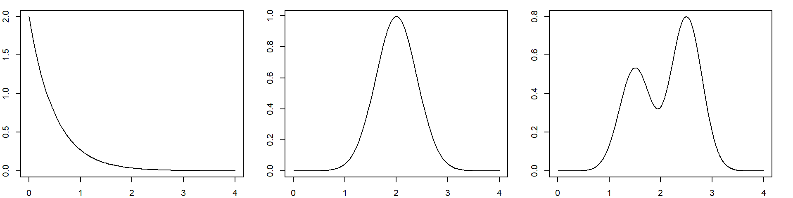
그러므로 수치로 요약하는 것뿐 아니라 그래프를 사용하여 수치형 분포의 세부적인 모양을 파악할 필요가 있다. 수치형 변수의 그래프를 살펴볼 때는 다음 사항을 주의깊게 살펴보아야 한다.
- 분포는 어느 정도 대칭적인 모양을 가지고 있는가? 비대칭적인 모양이라면 변환을 사용하여 대칭적인 분포로 변환할 수 있는가?
- 분포는 대체적으로 하나의 봉우리를 가지고 있는가? 아니면 두 개 이상의 봉우리를 가지고 있는가?
- 분포는 정규분포와 비슷한 모양을 가지고 있는가, 아니면 전혀 다른 모양의 분포를 가지고 있는가?
- 분포에 다른 데이터와 동떨어져 있는 이상치는 없는가?
8.1.2.1 히스토그램
수치형 변수의 도수분포표에 따라 막대 그래프를 그린 것이 히스토그램이다. 히스토그램은 수치형 분포의 전체적인 윤관을 파악할 때 가장 많이 사용되는 그래프이다.
ggplot2 패키지는 수치형 변수에 대한 히스토그램을 그려주는 geom_histogram() 함수를 제공한다. geom_histogram()의 기본적인 문법은 다음과 같다.
ggplot(데이터, aes(x = 수치형변수)) + geom_histogram()다음은 course 데이터의 총점 변수에 대한 히스토그램을 그린 예이다.
> library(ggplot2)
> ggplot(course, aes(x = score)) + geom_histogram()`stat_bin()` using `bins = 30`. Pick better value with `binwidth`.출력된 메시지에서 확인할 수 있듯이 기본적으로 수치 변수를 30 개의 구간으로 나누어 히스토그램을 그린다. 그러나 자동으로 부여된 구간 수가 수치형 변수를 표현하는 가장 좋은 방식이 아닐 수 있다. 위의 예에서는 45 개의 데이터밖에 없는데 구간이 30 개나 되어 한 구간에 매우 좋은 관측 도수밖에 없어서 우연적인 경향이 그래프로 나타날 수 있다. 그러므로 주어진 수치형 변수의 분포를 가장 잘 표현할 수 있도록 구간의 수를 조정해 볼 필요가 있다.
geom_histogram() 함수는 bins 인수로 사용자가 원하는 구간의 수를 입력 받는다. 또는 다은은 15 개와 10개의 구간으로 히스토그램을 그린 예이다. 구간의 수를 조정함에 따라 히스토그램의 모습이 크게 바뀌는 것을 볼 수 있다. 그러므로 히스토그램을 그릴 때는 분포의 모양을 잘 표현할 수 있도록 구간의 수를 잘 조정해야 한다.
> ggplot(course, aes(x = score)) + geom_histogram(bins = 15)> ggplot(course, aes(x = score)) + geom_histogram(bins = 10)
geom_histogram() 함수는 bins 인수로 구간의 수를 지정할 수 있을 뿐 아니라, binwidth 인수를 이용하여 구간의 폭을 지정할 수도 있다. 다음은 구간의 폭이 10이 되돍 하여 총점의 히스토그램을 그린 예이다.
> ggplot(course, aes(x = score)) + geom_histogram(binwidth = 10)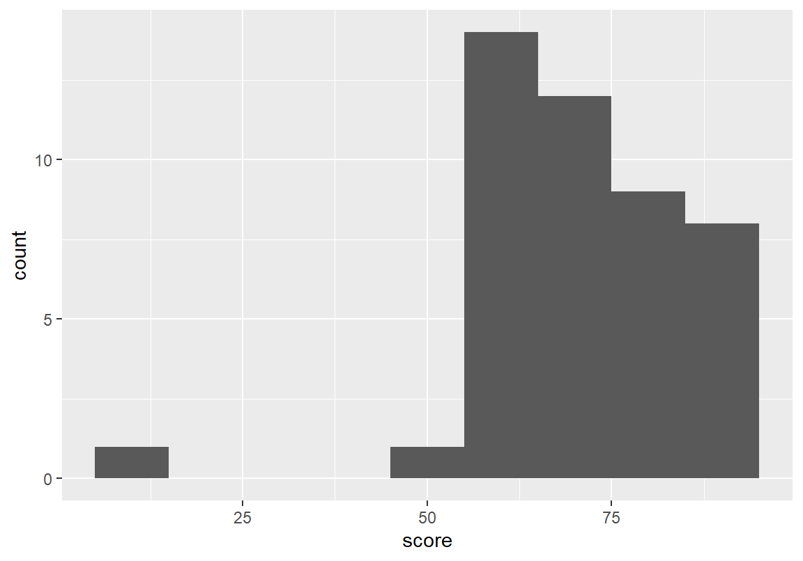
그런데 보통 구간의 크기를 지정하면 최소값과 최대값을 기준으로 binwidth의 길이로 구간을 나누므로, 나누어진 경계가 원하는 수치가 아닐 수 있다. 총점처럼 점수의 경우는 정확히 10, 20, …, 90, 100 등이 구간의 경계가 되는 것이 좋을 수 있다. 이처럼 원하는 경계에 따라 구간을 나누어 히스토그램을 그리려면, cut() 함수와 마찬가지로 breaks 인수를 이용하여 구간을 나누는 지점을 지정할 수 있다. cut() 함수와 다른 점은 right가 아니라 closed 인수를 사용하여 구간에 왼쪽 경계를 포함할지 오른쪽 경계를 포함할지를 지정하는 점이 다르다. (막대의 구간을 정확히 확인할 수 있도록 scale_x_continous() 함수로 가로축의 눈금을 조정하였다. 이 함수의 사용법은 R 프로그래밍의 그래프의 좌표축 조정 절을 참조. )
> ggplot(course, aes(x = score)) +
+ geom_histogram(breaks = seq(from=0, to=100, by=10), closed="left") +
+ scale_x_continuous(breaks = seq(from=0, to=100, by=20))8.1.2.2 확률 밀도 그래프
수치형 변수는 통계에서 자주 정규분포를 따른다고 가정된다. 정규분포를 정확히 따르지 않더라도 정규분포처럼 대칭적인 분포로 가정되는 경우가 많다. 따라서 히스토그램 등으로 수치형 변수의 분포를 살펴볼 때 다음 두 가지 사항을 확인해 보아야 한다.
수치형 변수의 분포가 한 쪽으로 치우친 분포는 아닌가? 특히 소득분포처럼 한 쪽으로 크게 치우친 분포의 경우는 분석을 수행할 때 로그 함수로 값을 변환하여 분석하는 게 좋을 때가 많다.
수치형 변수의 분포가 여러 봉우리는 가지고 있지는 않은가? 수치형 변수의 분포가 두 개 이상의 봉우리를 가지게 되면 수치형 변수의 값에 영향을 미치는 두 개 이상의 이질적인 집단이 있을 수 있다. 이러한 경우 하나의 집단으로 묶어서 분석을 할 때 좋은 결과를 얻기 힘든 경우가 많다. 따라서 분포에서 여러 봉우리를 만드는 원인이 무엇인지를 추적해 볼 필요가 있다.
그런데 히스토그램은 막대의 간격에 따라 여러 다른 모습의 분포를 보여주므로 분포의 봉우리를 파악하기 어렵다. 이런 경우에는 수치형 변수의 분포에 대한 확률밀도를 추정하여 그래프로 그려보면 분포의 추세를 파악하기 쉽다. ggplot2 패키지의 geom_density() 함수는 수치형 변수에 대해 (추정된) 확률 밀도 그래프를 그려준다.
ggplot(데이터, aes(x = 수치형변수)) + geom_density()다은은 course 데이터의 총점 열의 확률 밀도 그래프를 그린 예이다.
> ggplot(course, aes(x = score)) + geom_density()
그런데 확률밀도 함수는 추정된 것이므로 실제 데이터와 잘 부합되는지 확인해 보아야 한다. 따라서 히스토그램과 확률밀도 함수를 같은 좌표평면에 나타내서 서로 부합되는지 확인하는 것이 필요하다. 그런데 히스토그램은 각 구간의 절대 빈도로 세로축의 축적을 사용하고, 확률 밀도는 함수의 밑의 면적이 1이 되도록 세로축의 축적을 사용한다. 그러므로 두 그래프가 좌표평면에서 같이 표현되려면 히스토그램을 절대 빈도가 아니라 면적이 1이 되도록 상대 빈도로 그래프를 그려야 한다. 다음은 수치형 변수를 상대 빈도로 그래프를 그리는 문법이다.
ggplot(데이터, aes(x = 수치형변수)) + geom_histogram(aes(y = ..density..))다음은 course 데이터에 대한 히스토그램과 함께 추정되는 밀도 함수를 그린 예이다.
확률밀도 그래프에서 총점이 두 개의 봉우리를 가지는 것으로 나타나는데, 총점이 매우 낮은 예외적인 한 명의 학생과 나머지 학생 그룹에 의해서 이러한 분포가 나타난 것을 확인할 수 있다. geom_vline()으로 분포의 평균(빨간 실선)과 중위수(파란 파선)도 같이 표현하였는데, 예외적으로 낮은 점수의 학생 한 명 때문에 평균이 중위수보다 작은 왼쪽으로 꼬리가 긴 분포의 모양을 가지고 있음을 볼 수 있다.
> ggplot(course, aes(score)) +
+ geom_histogram(aes(y=..density..), breaks = seq(from=0, to=100, by=10), closed="left") +
+ geom_density() +
+ geom_vline(xintercept = mean(course$score), color="red", linetype=1) +
+ geom_vline(xintercept = median(course$score), color="blue", linetype=2)예외적으로 매우 낮은 점수를 받은 학생은 시험을 치르지 않아 0점 처리된 학생이다. 이 학생을 제외하고 분포를 다시 그려보자. 약간의 비대칭성이 있지만 평균과 중위수가 거의 같은 자리에 있어서 총점이 거의 대칭에 가까운 분포임을 볼 수 있다.
> ggplot(course_omitted, aes(score)) +
+ geom_histogram(aes(y=..density..), breaks = seq(from=0, to=100, by=10), closed="left") +
+ geom_density() +
+ geom_vline(xintercept = mean(course_omitted$score), color="red", linetype=1) +
+ geom_vline(xintercept = median(course_omitted$score), color="blue", linetype=2)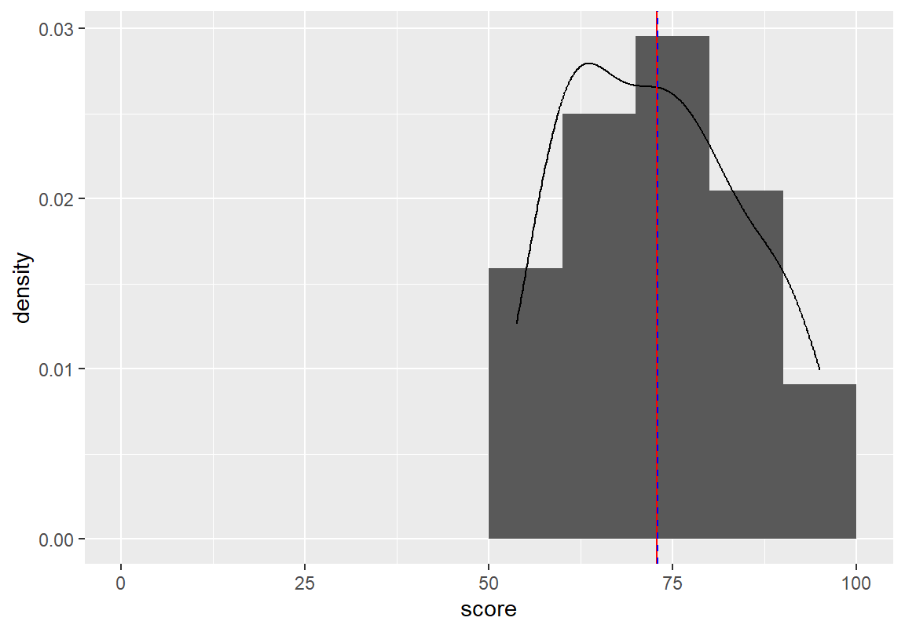
예외적인 데이터를 제외한 총점의 기술통계량을 살펴보면 왜도가 거의 0에 가까워서 대칭적인 분포이고, 첨도는 0보다 작아서 정규분포보다는 조금 납작한 형태의 분포임을 알 수 있다.
> psych::describe(course_omitted$score) vars n mean sd median trimmed mad min max range skew kurtosis se
X1 1 44 72.86 11.65 72.98 72.49 13.19 53.74 95 41.26 0.24 -1.12 1.768.1.2.3 Q-Q 그림
어떤 분포가 정규분포를 따르는지를 시각적으로 확인하는 방법 중 하나가 Q-Q 그림을 그려보는 것이다. Q-Q 그림은 실측된 변수와 이론적인 분포의 분위수(quantile)가 서로 부합되는지를 살펴본다. 부합이 된다면 Q-Q 그림은 직선에 가까운 그래프를 보인다.
ggplot2 패키지가 제공하는 geom_qq() 함수는 실측된 변수를 정규분포의 분위수와 비교하는 점을 그려준다. geom_qq_line()은 이론적 분포에 실제 분포가 부합될 때 점들이 위치되어야 할 직선을 그려준다. 다음은 ggplot2 패키지를 이용하여 Q-Q 그림을 그리는 문법이다.
ggplot(데이터, aes(sample = 수치형변수)) + geom_qq() + geom_qq_line()다음은 course 데이터의 총점 변수에 대한 Q-Q 그림을 그린 예이다.
> ggplot(course, aes(sample = score)) +
+ geom_qq() + geom_qq_line(color="red")
총점은 예외적으로 낮은 점수의 한 학생 때문에 정규분포와 차이를 보이고 있다. 예외적인 학생을 제외하고 Q-Q 그래프를 다시 그려보자. Q-Q 그림에서 가로축은 이론적인 정규분포를 세로축은 실제 데이터를 나타낸다. Q-Q 그림에서 실제 데이터가 정규분포에 비해 양 끝이 좀 더 중심에 가깝게 분포되어 있는 것을 확인할 수 있다. 그러므로 총점 분포는 정규분포보다 더 평평한 모양을 가지고 이는 첨도 값에서도 확인할 수 있었다.
> ggplot(course_omitted, aes(sample = score)) +
+ geom_qq() + geom_qq_line(color="red")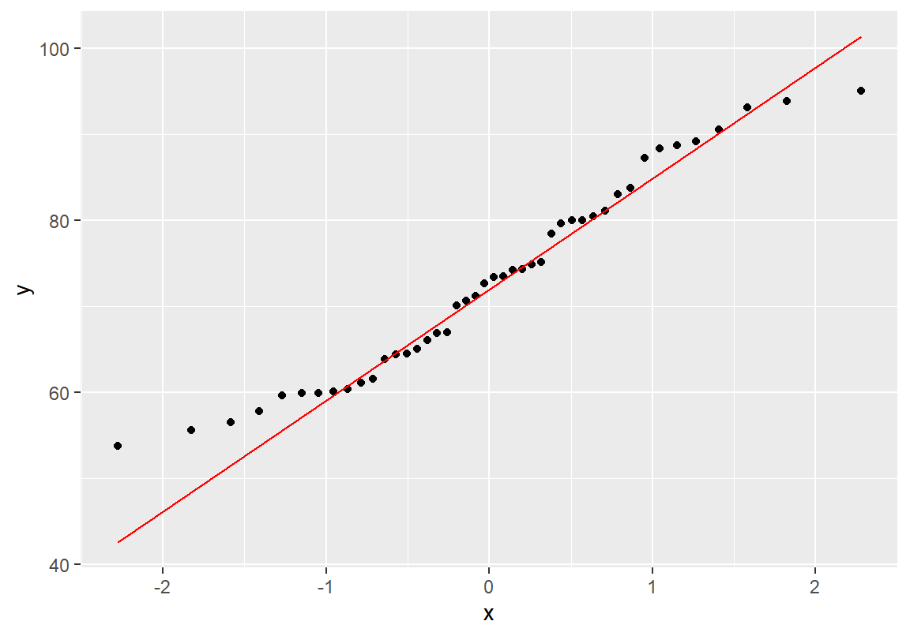
이러한 정규분포와의 차이가 통계적으로 유의미한 것인지 분포의 정규성에 대해 가설검정을 해보자. p-값이 크게 나와 실제 데이터와 정규분포와의 차이는 통계적으로 유의미하지 않은 것으로 확인된다.
> shapiro.test(course_omitted$score)
Shapiro-Wilk normality test
data: course_omitted$score
W = 0.95653, p-value = 0.096468.1.2.4 상자 그림
어떤 분포에 이상치가 있는지를 살펴보려면 상자 그림(box plots)를 그려보는 것이 좋다. 상자 그림은 그림 8.1와 같은 상자 모양으로 수치형 변수의 분포를 나타낸다. 상자 그림으로 수치형 변수의 분포에 대해서 알아낼 수 있는 정보는 다음과 같다.
Figure 8.1: 상자 그림의 의미
- 상자의 상단은 수치형 분포의 3분위수(3Q)를, 상자의 하단은 수치형 분포의 1분위수(1Q)를 나타낸다. 따라서 상자의 범위만으로 상위 25%와 하위 25%를 제외한 가운데 50%의 데이터의 범위를 확인할 수 있다.
- 상자 가운데 진한 선은 2분수(2Q), 즉, 중위수를 나타낸다. 중위수의 위치로 분포가 대략적으로 대칭인지 한쪽으로 쏠려있는지를 파악할 수 있다. 중위수가 상자의 중간에 위치하면 분포가 어느 정도 대칭적인 모양임을 알 수 있다. 중위수가 상자의 상단에 가까우면 분포가 오른쪽으로 치우친(왼쪽으로 꼬리가 긴) 분포이고, 중위수가 상자의 하단에 가까우면 왼쪽으로 치우친(오른쪽으로 꼬리가 긴) 분포일 가능성이 크다.
- 상자 상단과 하단의 수염(whiskers)은 이상치를 제외한 분포의 최대값과 최소값을 나타낸다. 3분위수와 1분위수의 차이를 IQR(interquartile range)라고 한다. 일반적으로 3분위수에서 분포의 상단쪽으로 IQR의 1.5 배보다 멀리 떨어진 수치는 이상치로 간주한다. 마찬가지로 1분위수에서 분포의 하단쪽으로 IQR의 1.5 배보다 멀리 떨어진 수치도 이상치로 간주한다. 상자의 수염은 상자에서 1.5 IQR 범위 내의 데이터 중 가장 큰 값과 가장 작은 값의 위치를 알려준다.
- 상자에서 1.5 IQR보다 더 멀리 떨어진 모든 데이터는 이상치로 간주하여 점으로 표현한다.
ggplot2패키지의geom_boxplot()함수는 상자 그림을 그려준다. 다음은ggplot2패키지를 이용하여 상자 그림을 그리는 문법이다.
ggplot(데이터, aes(x 또는 y = 수치형변수)) + geom_boxplot()다음은 course 데이터의 총점 변수에 대한 상자 그림을 그린 예이다. y 속성에 score 변수를 매핑하였다. 이렇게 한 수치형 변수를 y에 매핑하여 상자 그림을 그릴 때는 그래프의 가로축의 수치는 별다른 의미를 가지지 않는다. 나중에 상자 그래프는 범주형 변수에 따라 수치형 변수의 분포가 어떻게 변하는지를 보기 위해 자주 사용되는데 그 때는 가로축은 범주형 변수의 값을 의미한다.
> ggplot(course, aes(y = score)) + geom_boxplot()총점은 약간 상단에 치우친(오른쪽에 치우친) 분포의 모습을 보여주고 있고, 최소값이 일반적인 데이터에서 크게 떨어져 있는 이상치임을 확인할 수 있다.
8.1.3 수치형 변수의 변환
오른쪽으로 꼬리가 긴 분포를 가지는 수치형 변수의 변환
ggplot2 패키지가 제공하는 diamonds 데이터에서 다이아몬드의 중량(carat)과 가격(price) 변수의 분포를 확인해 보자. 특히 다이아몬드 가격은 오른쪽으로 매우 꼬리가 긴 분포로 전혀 대칭적이지 않다.
> ggplot(diamonds, aes(x = carat)) + geom_histogram()`stat_bin()` using `bins = 30`. Pick better value with `binwidth`.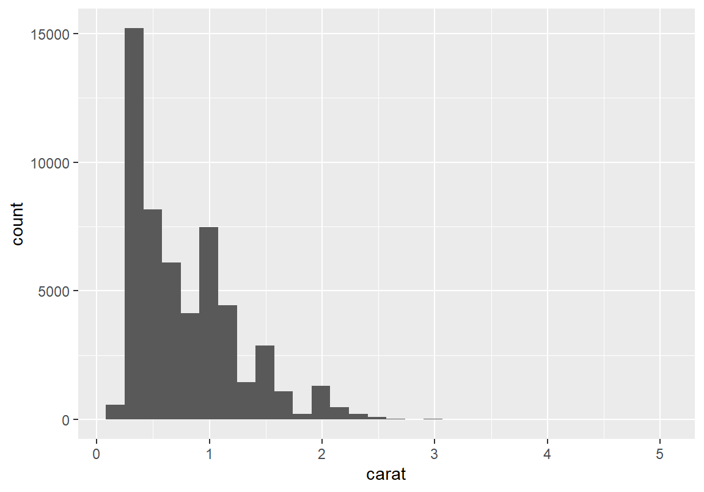
> psych::describe(diamonds$carat) vars n mean sd median trimmed mad min max range skew kurtosis se
X1 1 53940 0.8 0.47 0.7 0.73 0.47 0.2 5.01 4.81 1.12 1.26 0> ggplot(diamonds, aes(x = price)) + geom_histogram()`stat_bin()` using `bins = 30`. Pick better value with `binwidth`.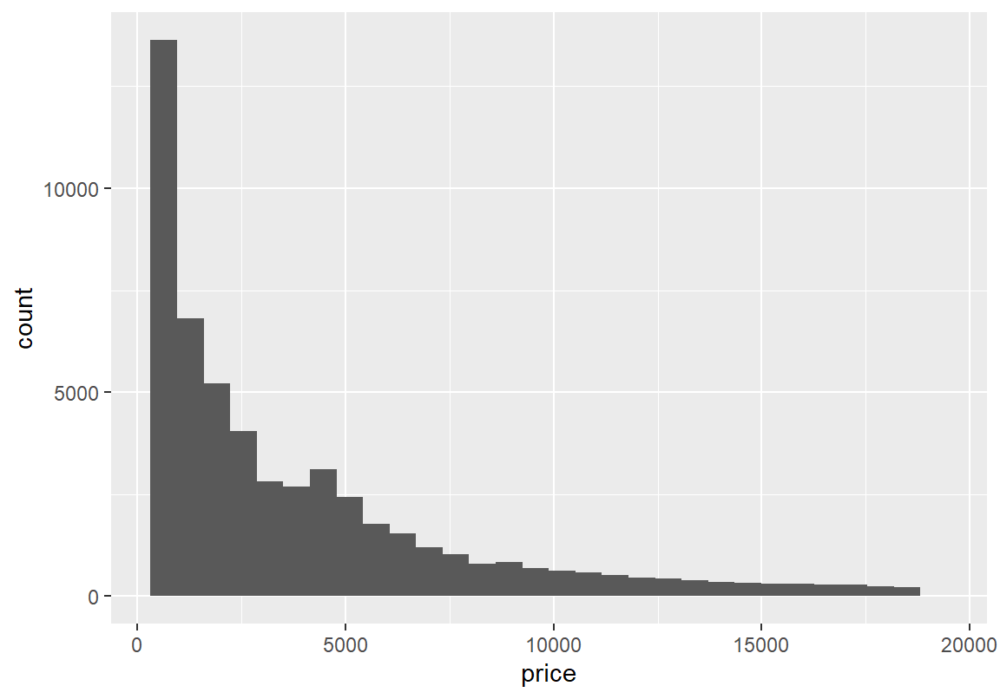
> psych::describe(diamonds$price) vars n mean sd median trimmed mad min max range skew
X1 1 53940 3932.8 3989.44 2401 3158.99 2475.94 326 18823 18497 1.62
kurtosis se
X1 2.18 17.18이러한 분포처럼 대부분의 관측치가 한 쪽에 치우쳐 있는 분포를 그대로 사용하여 모형을 만들면 다음과 같은 문제점이 발생한다.
- 모형이 예외적으로 큰 값의 영향을 크게 받아 대다수의 값이 모여 있는 구간에서의 분석의 정확도가 떨어질 수 있다.
- 가설검정이나 회귀모형에서 분포의 정규성이 가정되어야 하는 경우 가설검정이나 회귀모형을 수행할 수 없게 된다.
수치형 변수가 이렇게 가격이나 소득처럼 관측값이 모두 0 이상이고 왼쪽으로 치우친 분포를 보이는 경우, 로그 변환이나 제곱근으로 변환하여 대칭적인 분포를 만들어 통계 분석을 하는 것이 좋다.
- 로그 변환은 1, 10, 100, 1000 등으로 동일한 배수로 늘어나는 수치를 0, 1, 2, 3 등으로 등간격 척도로 변환해 준다. 즉, 100 만원과 1,000 만원의 차이가 1,000 만원에서 1 억의 차이와 같아지도록 척도를 변환해 준다.
- 제곱근으로 변환하면, 1, 4, 9, 16 등으로 제곱수로 늘어나는 값을 1, 2, 3, 4 등의 등간격 척도로 변환해 준다. 즉, 만원을 가진 사람에게 3만원을 더해주는 효과와 4만원을 가진 사람에게 5만원을 더해주는 효과가 같다고 간주한다.
ggplot2는 scale_x_log10()과 scale_x_sqrt() 함수를 가지고 있어서 가로축의 값을 자동으로 로그 변환 또는 제곱근 변환을 하여 그래프를 그려준다.
> ggplot(diamonds, aes(x = price)) + geom_histogram() + scale_x_log10()`stat_bin()` using `bins = 30`. Pick better value with `binwidth`.> ggplot(diamonds, aes(x = price)) + geom_histogram() + scale_x_sqrt()`stat_bin()` using `bins = 30`. Pick better value with `binwidth`.그래프의 결과를 보듯이 제곱근 변환으로는 분포를 충분히 대칭적인 형태로 변환하지 못한다. 반면 로그 변환을 하면 다이아몬드 가격의 분포가 어느 정도 대칭적인 모습으로 변하는 것을 볼 수 있다. 아울러 로그 변환한 변수의 히스토그램을 보면 2 개 이상의 봉우리가 보인다. 확률 밀도 그래프를 그려 분포의 봉우리를 다시 확인해 보자.
> ggplot(diamonds, aes(x = price)) +
+ geom_histogram(aes(y=..density..)) + geom_density(color="red") + scale_x_log10()`stat_bin()` using `bins = 30`. Pick better value with `binwidth`.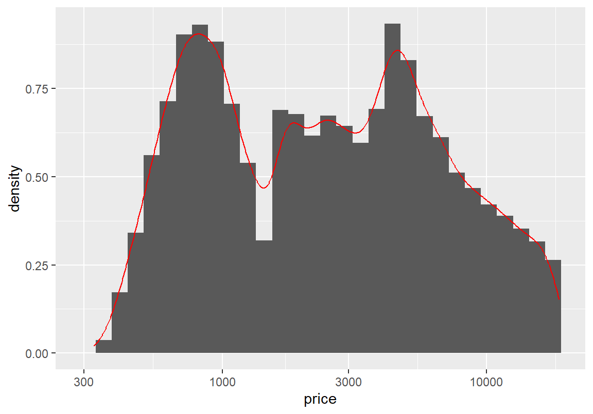
가격 분포에서 여러 봉우리가 있는 것으로 보아 가격과 관련하여 다이아몬드가 여러 개의 군집으로 나누어 질 수 있음을 알 수 있다. 가격이 왜 이러한 군집된 형태를 보이는가에 대한 탐구는 다음 절로 넘기고, 여기서는 다이아몬드 중량에 대해서도 같은 변환을 한 후 그래프를 그려보자.
> ggplot(diamonds, aes(x = carat)) + geom_histogram() + scale_x_log10()`stat_bin()` using `bins = 30`. Pick better value with `binwidth`.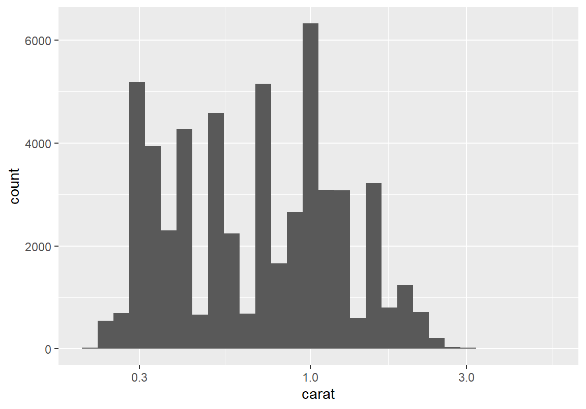
> ggplot(diamonds, aes(x = carat)) + geom_histogram() + scale_x_sqrt()`stat_bin()` using `bins = 30`. Pick better value with `binwidth`.중량도 제곱근보다는 로그 변환이 더 적절해 보인다. 로그 변환 그래프를 보면 2 개 이상의 봉우리가 보인다. 다시 확률 밀도 그래프를 그려 분포의 봉우리를 확인해 보자.
> ggplot(diamonds, aes(x = carat)) +
+ geom_histogram(aes(y=..density..)) + geom_density(color="red") + scale_x_log10()`stat_bin()` using `bins = 30`. Pick better value with `binwidth`.다이아몬드 중량과 가격 변수를 로그 변환한 후의 기술통계량을 살펴보자. 수치 변수를 밑이 10일 로그로 변환하려면 log10() 함수를 사용한다. (제곱근으로 변환하려면 sqrt() 함수를 사용한다.)
두 변수 모두 로그 변환 후에 평균과 중위수의 값의 차이가 작고, 왜도도 0에 가까워 대칭적인 분포의 모습을 보인다. 첨도는 두 변수 모두 음의 값으로 정규분포보다는 납작하게 퍼진 분포를 보여준다.
> psych::describe(log10(diamonds$carat)) vars n mean sd median trimmed mad min max range skew kurtosis se
X1 1 53940 -0.17 0.25 -0.15 -0.18 0.31 -0.7 0.7 1.4 0.1 -1.06 0> psych::describe(log10(diamonds$price)) vars n mean sd median trimmed mad min max range skew kurtosis se
X1 1 53940 3.38 0.44 3.38 3.37 0.56 2.51 4.27 1.76 0.12 -1.1 0로그 변환을 할 때 한 가지 주의 사항은 로그 값은 오직 양의 값에 대해서만 정의된다. 수치 변수가 0의 값을 가지면 로그 변환하면 음의 무한대의 값을 가지므로 제대로된 변환이 되지 않는다. 그러한 경우에는 수치 변수에 1을 더해서 로그 변환한다. 예를 들어 diamond의 y 변수를 로그 변환한다고 가정해 보자. 이 변수는 0으로 측정된 값이 있으므로 로그 변환하면 평균 등이 모두 음의 무한대가 되는 것을 볼 수 있다.
> summary(diamonds$y) Min. 1st Qu. Median Mean 3rd Qu. Max.
0.000 4.720 5.710 5.735 6.540 58.900 > psych::describe(log10(diamonds$y)) vars n mean sd median trimmed mad min max range skew kurtosis se
X1 1 53940 -Inf NaN 0.76 0.75 0.11 -Inf 1.77 Inf NaN NaN NaN이러한 경우 1을 변수에 더한 후 로그 변환을 하면 된다. 물론 이렇게 1이 더해진 수치변수는 해석을 할 때 1이 더해진 수치임을 잊지 말아야 한다.
> psych::describe(log10(diamonds$y + 1)) vars n mean sd median trimmed mad min max range skew kurtosis se
X1 1 53940 0.82 0.07 0.83 0.82 0.09 0 1.78 1.78 0.01 1.88 0자주 사용되는 변환 방법
지금까지는 오른쪽으로 꼬리가 긴 분포에 대하여 로그 변환과 제곱근 변환을 하는 방법을 살펴보았다. 그러나 이러한 변환 외에도 변수의 역수를 취하거나 제곱을 하는 변환 등도 사용할 수도 있다. 다음 표는 마케팅이나 경영 문제에서 자주 사용되는 수치형 변수의 변환 방법이다. ((Chapman and Feit 2015, p 102)에서 인용)
| 변수 | 자주 사용되는 변환 방법 |
|---|---|
| 판매량, 판매수입, 가구수입, 가격 | \(\log(x)\) |
| 거리 | \(1/x\), \(1/x^2\), \(\log(x)\) |
| 오른쪽으로 꼬리가 긴 분포 | \(\sqrt{x}\), \(\log(x)\) |
| 왼쪽으로 꼬리가 긴 분포 | \(x^2\) |
변환된 변수를 데이터 열로 추가하기
수치형 변수에 대하여 적절한 변환을 수행한 후, 변환된 변수를 분석에 사용하려면 데이터에 새로운 열로 추가하는 것이 좋다. 데이터에 새로운 열을 추가하는 방법은 다음과 같다.
데이터$추가할_열_이름 <- log10(데이터$수치형변수) # 밑이 10인 로그로 변환 후 열 추가
데이터$추가할_열_이름 <- sqrt(데이터$수치형변수) # 제곱근으로 변환 후 열 추가
#데이터$추가할_열_이름 <- 수치함수(데이터$수치형변수) 결과나 수치 벡터 연산으로 변환 후 저장 다음은 diamonds 데이터의 carat과 price 열을 각각 밑이 10인 로그로 변환한 후 carat_log10과 price_log10이라는 열로 diamonds 데이터에 추가한 예이다.
> diamonds$carat_log10 <- log10(diamonds$carat)
> diamonds$price_log10 <- log10(diamonds$price)
> summary(diamonds) carat cut color clarity depth
Min. :0.2000 Fair : 1610 D: 6775 SI1 :13065 Min. :43.00
1st Qu.:0.4000 Good : 4906 E: 9797 VS2 :12258 1st Qu.:61.00
Median :0.7000 Very Good:12082 F: 9542 SI2 : 9194 Median :61.80
Mean :0.7979 Premium :13791 G:11292 VS1 : 8171 Mean :61.75
3rd Qu.:1.0400 Ideal :21551 H: 8304 VVS2 : 5066 3rd Qu.:62.50
Max. :5.0100 I: 5422 VVS1 : 3655 Max. :79.00
J: 2808 (Other): 2531
table price x y
Min. :43.00 Min. : 326 Min. : 0.000 Min. : 0.000
1st Qu.:56.00 1st Qu.: 950 1st Qu.: 4.710 1st Qu.: 4.720
Median :57.00 Median : 2401 Median : 5.700 Median : 5.710
Mean :57.46 Mean : 3933 Mean : 5.731 Mean : 5.735
3rd Qu.:59.00 3rd Qu.: 5324 3rd Qu.: 6.540 3rd Qu.: 6.540
Max. :95.00 Max. :18823 Max. :10.740 Max. :58.900
z carat_log10 price_log10
Min. : 0.000 Min. :-0.69897 Min. :2.513
1st Qu.: 2.910 1st Qu.:-0.39794 1st Qu.:2.978
Median : 3.530 Median :-0.15490 Median :3.380
Mean : 3.539 Mean :-0.17153 Mean :3.382
3rd Qu.: 4.040 3rd Qu.: 0.01703 3rd Qu.:3.726
Max. :31.800 Max. : 0.69984 Max. :4.275
8.1.3.1 Box-Cox 변환
자주 사용되는 변환 방법으로도 좋은 결과를 얻지 못했거나 어떠한 변환이 좋을지 모를 때는 일반적인 변환 방법인 Box-Cox 변환을 사용할 수 있다. Box-Cox 변환은 수치형 변수를 거듭제곱 형태로 변환한다. 예를 들어 원 수치형 변수 \(x\)를 \(x^2, 1/x = x^{-1}, x^{1/2} = \sqrt{x}\) 등의 거듭제곱 형태로 변환을 한다. 좀 더 엄밀히 정의하자면 다음처럼 변수 \(x\)를 거듭제곱 형태인 \(x_{\lambda}\)로 변환하는데, 거듭제곱의 지수 \(\lambda\)에 여러 값을 대입하여 변환한 후 그 중 가장 적합한 \(\lambda\)의 값을 결정한다. 가장 적합한 변환이란 변환된 \(x_{\lambda}\)의 분포가 정규분포에 가까운 변환을 의미한다. \[ x_{\lambda} = \begin{cases} \frac{x^{\lambda} - 1}{\lambda}, & \lambda \neq 0 \\ \log(x), & \lambda = 0 \end{cases} \]
car 패키지의 powerTransform() 함수는 Box-Cox 변환을 수행하여 가장 적합한 \(\lambda\) 값을 알려준다. car 패키지가 아직 설치되어 있지 않으면 다음 명령이나 RStudio의 [Package] 탭을 사용하여 car 패키지를 설치한다.
> install.packages("car")Box-Cox 변환에서 어떤 \(\lambda\) 값이 최적인지 파악하려면 다음 문법처럼 powerTransform() 함수에 Box-Cox 변환을 테스트할 수치형변수를 전달한 후 그 결과를 뒤에서 사용하기 위해 R 변수에 할당을 한다.
결과_저장_변수 <- car::powerTransform(데이터$수치형변수) # 결과를 변수에 저장
결과_저장_변수 # 결과 출력다음은 diamonds의 price 열에 대하여 Box-Cox 변환에서 최적 \(\lambda\)를 탐색한 결과이다.
> bc <- car::powerTransform(diamonds$price)
> bcEstimated transformation parameter
diamonds$price
-0.06699008 최적의 \(\lambda\) 값으로 -0.0669901이 추정되었다. 그런데 일반적으로 제시된 추정 값으로 변환을 하기 앞서 변환을 하지 않는 것(\(\lambda = 1\))과 로그 변환(\(\lambda = 0\))하는 것에 비해 제시된 변환이 통계적으로 확실히 유의미한 변환인지 검정해 볼 필요가 있다.
왜냐하면 원래 변수나 로그 변환한 변수는 그 의미를 파악하기 쉽지만 원래 변수를 -0.0669901 제곱한 변수의 의미가 무엇인지 해석하기 어렵기 때문이다. 그러므로 변환이 확실하게 유의미하게 좋다고 판단되지 않으면 변환을 하지 않거나 로그 변환 등의 자주 사용되는 변환을 수행하는 것이 좋다.
제시된 \(\lambda\) 값으로 변환하는 것이 유의미한지 정보를 얻으려면 Box-Cox 변환 결과를 summary() 함수에 전달을 하여 상세 변환 결과를 출력한다.
> summary(bc)bcPower Transformation to Normality
Est Power Rounded Pwr Wald Lwr Bnd Wald Upr Bnd
diamonds$price -0.067 -0.07 -0.0761 -0.0579
Likelihood ratio test that transformation parameter is equal to 0
(log transformation)
LRT df pval
LR test, lambda = (0) 210.8779 1 < 2.22e-16
Likelihood ratio test that no transformation is needed
LRT df pval
LR test, lambda = (1) 53082.28 1 < 2.22e-16Likelihood ratio test로 시작하는 두 문단이 로그 변환(\(\lambda = 0\))과 무변환(\(\lambda = 1\))보다 제시된 변환이 통계적으로 유의미한지 최우도비 검정을 한 결과이다. 이 결과에서 우리가 살펴볼 값은 pval로 표시된 검정통계량의 p-값이다. p-값이 작게 나올수록 제시된 변환이 통계적으로 유의미한 변환이라 할 수 있다. 이 예에서는 모두 매우 작은 값이 나왔으므로 제시된 값으로 변환하는 것이 통계적으로 유의미하다고 할 수 있다.
제시된 \(\lambda\) 값에 따라 원 수치형 변수를 Box-Cox 변환을 하여 원래의 데이터에 변환된 열을 추가하려면 다음처럼 car 패키지의 bcPower() 함수를 사용하는 다음 문법을 이용한다.
데이터$추가할_열_이름 <-
car::bcPower(데이터$수치형_변수, coef(powerTransfrom_결과_저장_변수))다음은 diamonds의 price 열에 대하여 앞에서 찾은 최적 \(\lambda\) 값으로 변환을 수행한 후, 변환된 변수에 대하여 히스토그램과 통계 요약을 수행한 결과이다.
> diamonds$price_bc <- car::bcPower(diamonds$price, coef(bc))
> ggplot(diamonds, aes(x = price_bc)) + geom_histogram() `stat_bin()` using `bins = 30`. Pick better value with `binwidth`.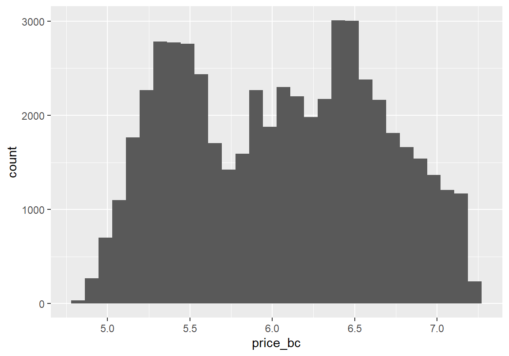
> psych::describe(diamonds$price_bc) vars n mean sd median trimmed mad min max range skew kurtosis se
X1 1 53940 6.05 0.6 6.07 6.04 0.77 4.8 7.21 2.41 0.03 -1.13 0마찬가지 방법으로 diamonds 데이터의 carat 열에 대해 변환을 수행해 보자.
> bc <- car::powerTransform(diamonds$carat)
> summary(bc)bcPower Transformation to Normality
Est Power Rounded Pwr Wald Lwr Bnd Wald Upr Bnd
diamonds$carat -0.0949 -0.09 -0.1105 -0.0793
Likelihood ratio test that transformation parameter is equal to 0
(log transformation)
LRT df pval
LR test, lambda = (0) 143.377 1 < 2.22e-16
Likelihood ratio test that no transformation is needed
LRT df pval
LR test, lambda = (1) 20088.35 1 < 2.22e-16> diamonds$carat_bc <- car::bcPower(diamonds$carat, coef(bc))
> ggplot(diamonds, aes(x = carat_bc)) + geom_histogram() `stat_bin()` using `bins = 30`. Pick better value with `binwidth`.> psych::describe(diamonds$carat_bc) vars n mean sd median trimmed mad min max range skew kurtosis se
X1 1 53940 -0.42 0.61 -0.36 -0.43 0.76 -1.74 1.49 3.23 0.02 -1.11 0변환 후 두 변수 모두 어느 정도 대칭적인 분포가 되었다. 그런데 변환된 후의 다이아몬드 중량과 가격의 분포 그래프를 보면 봉우리의 세부적인 모양을 다르지만 가장 큰 두 봉우리의 양상이 유사한 측면이 있다. 그러므로 이 두 변수에 상관성이 있는지 확인해 볼 필요가 있다. 다이아몬드 중량과 가격에 상관성이 있는지를 분석하기 위해서는 두 수치형 변수의 상관성에 대한 기술통계 분석 방법이 필요하다.
8.2 둘 이상의 수치형 변수의 상관성 분석
다변량 수치 데이터가 있을 때 각 변수의 분포를 파악 한 후 다음로 파악해야 할 사항은 각 변수 간의 상관관계를 파악하는 것이다. 예를 들어 course 데이터에서는 중간고사 점수와 기말고사 점수의 상관성이 있는지, 최종평가 점수와 숙제 점수는 연관성이 있는지, 또는 diamonds 데이터에서는 다이아몬드 중량과 가격은 연관성이 있는지를 파악해야 한다.
8.2.1 상관계수
두 변수 데이터에 대한 (선형적) 상관관계를 수치적으로 측정하는 대표적 통계량이 Pearson 상관계수(correlation coefficient)이다. 다음과 같이 \(n\)개의 쌍으로 이변량 데이터 \((x_1, y_1), (x_2, y_2), \ldots, (x_n, y_n)\)가 측정되었다면 두 변수의 Pearson 상관계수 \(r_{xy}\)는 다음과 같이 정의된다.
\[ r_{xy} = \frac{s_{xy}}{s_x s_y} = \frac{ \frac{1}{n-1} \sum_{i=1}^{n} (x_i - \bar{x}) (y_i - \bar{y}) }{ \sqrt{ \frac{1}{n-1} \sum_{i=1}^{n} (x_i - \bar{x})^2 } \sqrt{ \frac{1}{n-1} \sum_{i=1}^{n} (y_i - \bar{y})^2 } } \]
Pearson 상관계수는 두 변수 간의 선형 상관성의 정도를 나타내는 통계량으로 -1부터 1 사이의 값을 가진다.
- 두 변수의 선형 상관성이 없으면 0에 가까운 값이 된다.
- 1에 가까울 수록 양의 상관성이 있다고 한다.
- -1에 가까울수록 음의 상관성을 가진다.
그런데 Pearson 상관계수는 두 변수 간의 선형 상관성에 대한 통계량이기 때문에 비선형적인 관계는 잘 포착하지는 못한다. 다음은 두 변수 간의 상관계수와 산점도를 보여준다. 그래프의 두 번째 행은 두 변수의 관계를 나타내는 선의 기울기와 상관계수의 값은 기울기가 양인지, 음인지, 0인지를 제외하고는 관계가 없음을 보여준다. 아울러 그래프의 마지막 행처럼 비선형적 관계가 있지만 선형적 관계가 없으면 0에 가까운 상관계수 값이 나오는 것을 확인할 수 있다.

Figure 8.2: 피어슨 상관계수 (출처: 위키피디아)
그럼 Pearson 상관계수의 값이 어느 정도의 값이 나와야 두 수치형 변수가 상관성이 있다고 보는가? 이 질문에 대한 답은 문제 상황에 따라 다르다. 물리적 현상과 관련된 자연과학이나 공학 분야의 실험 데이터처럼 측정의 정확도가 높은 경우에는 상관계수의 절대값이 0.9 이상이어야 두 변수의 상관관계가 높다고 볼 수 있다. 반면 사람의 심리나 행동과 관련된 사회과학 분야에서는 측정의 정확도가 물리적 현상만큼 높지 않으며 요인도 매우 복잡하게 상호작용하는 경우에는 상관계수의 절대값이 0.3 이상이면 높은 상관 관계가 있다고 보기도 한다. 사람의 심리나 행동을 연구하는 심리학에서 발전한 Cohen의 어림짐작 규칙은 상관계수의 절대값에 대해 다음을 제시한다.
- 상관계수의 절대값이 0.1 정도이면 상관성이 작거나 약하다고 본다.
- 상관계수의 절대값이 0.3 정도이면 상관성이 중간 정도라고 본다.
- 상관계수의 절대값이 0.5 정도이면 상관성이 크고 강하다고 본다.
Cohen은 상관성이 큰 경우 일반적인 관찰자도 두 변수의 상관성을 알아채게 된다고 본다. 그러나 이러한 기준은 사람의 심리와 행동을 연구하는 분야나 유사한 분야에 적용하기는 적절하지만 모든 분야에 일률적으로 적용될 수 없다는 점에 주의하여야 한다.
R의 기본 패키지의 cor() 함수는 두 변수의 상관성을 구해 준다.
cor(데이터$수치형변수1, 데이터$수치형변수2) # 두 수치형 변수의 상관계수 계산
cor(데이터[수치형_변수_인덱스_벡터]) # 선택된 수치형 변수의 모든 조합에 대해 계산다음은 중간고사와 기말고사의 Pearson 상관계수를 구한 예이다. 중간고사와 기말고사에는 매우 강한 선형 상관성이 있다.
> cor(course$mid, course$final)[1] NA> cor(course$mid, course$final, use = "complete.obs")[1] 0.8348258중간과 기말고사에 결측치가 있기 때문에 use 인수로 결측치를 어떻게 처리할지를 지정하지 않으면 결과가 NA로 나온다. use는 다음과 같은 값을 가질 수 있다.
- “everything”: 모든 데이터를 사용하고 상관계수를 계산할 두 변수 중에
NA가 있으면 결과도NA가 나온다.use인수의 기본 설정은 “everything”이다. - “all.obs”: 상관계수를 계산할 변수 중에
NA가 있으면 오류를 발생시킨다. - “complete.obs”: 변수 중에 하나라도
NA가 있으면 그 행은 삭제하고 완전한 행만 가지고 상관계수를 계산한다. 만약 완전한 행이 하나도 없으면 오류를 발생시킨다. - “na.or.complete”: “complete.obs”와 같은데, 완전한 행이 하나도 없으면
NA를 반환한다. - “pairwise.complete.obs”: 상관계수를 계산할 두 변수에서
NA가 있으면 그 관측은 제외하고 상관계수를 계산한다.
use 인수는 cor() 함수가 데이터 프레임 전체에 작용될 때 그 의미가 잘 들어난다. cor() 함수가 수치형 변수로만 이루어진 데이터 프레임에 적용되면 모든 두 변수 쌍에 대한 상관계수를 계산해 준다.
> cor(course[5:8]) mid final hw score
mid 1 NA NA NA
final NA 1 NA NA
hw NA NA 1.000000 0.697733
score NA NA 0.697733 1.000000use 인수의 기본 값이 “everything”이므로 결측치가 있는 중간고사와 기말고사가 상관계수 계산에 사용된 경우에는 NA가 결과로 나왔다. “complete.obs”을 use 인수에 사용하면 중간, 기말, 숙제, 총점 중 하나라도 결측치가 있는 학생과 관련된 데이터 행은 없애고 상관계수를 구한다. 그러기 때문에 모든 변수 조합에 대하여 상관계수가 잘 계산되어 나왔다. 중간과 기말고사는 총점과 높은 상관성이 있지만 숙제는 총점과 약한 상관성만 있다.
> cor(course[5:8], use = "complete.obs") mid final hw score
mid 1.0000000 0.8348258 0.3128638 0.9571183
final 0.8348258 1.0000000 0.2843525 0.9472175
hw 0.3128638 0.2843525 1.0000000 0.4078304
score 0.9571183 0.9472175 0.4078304 1.0000000“complete.obs”은 결측치가 있는 행은 모두 삭제하므로 일관성을 가지고 상관계수를 계산할 수 있는 장점이 있지만, 결측치가 흩뿌려져 있는 경우 상관성 계산에 사용되지 못하는 데이터의 양이 많아져 데이터 손실이 클 수 있다. 상관계수는 결국 두 변수의 관계이므로, 이러한 경우에는 상관계수 계산에 사용되는 변수에 결측치가 없으면 다른 변수에 결측치가 있어도 사용하도록 하는 게 좋다. 이러한 방식으로 상관계수를 계산하려면 use 인수를 “pairwise.complete.obs”으로 설정한다. 결측치가 없는 hw과 score 변수의 상관계수 계산에 mid와 final에 결측치가 있는 행도 사용하였으므로 앞의 결과와는 조금 다른 결과를 볼 수 있다.
> cor(course[5:8], use = "pairwise.complete.obs") mid final hw score
mid 1.0000000 0.8348258 0.3128638 0.9571183
final 0.8348258 1.0000000 0.2843525 0.9472175
hw 0.3128638 0.2843525 1.0000000 0.6977330
score 0.9571183 0.9472175 0.6977330 1.0000000Pearson 상관계수는 평균, 분산과 마찬가지로, 산술 계산 상의 좋은 수학적 성질을 가지고 있지만 이상치에 의해 영향을 크게 받는다. 이러한 문제점을 개선한 상관계수가 Spearman 상관계수이다. Spearman 상관계수는 수치 값이 아니라 각 변수의 관측치의 등수(rank)를 사용하여 상관계수를 계산한다. 따라서 소수의 이상치가 있어도 등수에 큰 변화가 없으므로 이상치의 영향을 덜 받는다.
Spearman 상관계수를 구하려면, cor() 함수의 method 인수를 “spearman”으로 설정하면 된다. course 데이터는 Pearson과 Spearman 상관계수의 차이가 크지 않다.
> cor(course[5:8], use = "pairwise.complete.obs", method = "spearman") mid final hw score
mid 1.0000000 0.8368262 0.3814754 0.9492544
final 0.8368262 1.0000000 0.2667068 0.9386216
hw 0.3814754 0.2667068 1.0000000 0.4647101
score 0.9492544 0.9386216 0.4647101 1.0000000Kendall 상관계수는 관측치 쌍 \((x_i, y_i), (x_j, y_j)\)에 대하여 \(x\)와 \(y\)가 같은 방향으로 움직이면 1, 반대로 움직이면 -1, 한 변수라도 같은 값이면 0으로 하여 관측치 쌍의 상관계수를 구한 후, 모든 관측치 쌍의 상관계수를 더하여 구한다. 관측치 쌍들 사이에 경향이 동일하게 움직이는가만 계산하기 때문에 이상치에 크게 영향을 받지 않는다.
Kendall 상관계수를 구하려면, cor() 함수의 method 인수를 “kendall”로 설정하면 된다. course 데이터는 Kendall 상관계수가 Pearson과 Spearman 상관계수보다는 적게 나오는 것을 볼 수 있다.
> cor(course[5:8], use = "pairwise.complete.obs", method = "kendall") mid final hw score
mid 1.0000000 0.6494909 0.2758297 0.8160261
final 0.6494909 1.0000000 0.1835906 0.8051283
hw 0.2758297 0.1835906 1.0000000 0.3309720
score 0.8160261 0.8051283 0.3309720 1.0000000앞서서 중간고사와 기말고사의 선형 상관성이 높은 것으로 나타났는데 이러한 상관성이 통계적으로 유의미한지를 파악하려면 상관성에 대한 가설검정을 수행해야 한다.
cor.test() 함수를 이용하면 상관계수에 대한 가설검정을 수행할 수 있다. cor.test() 함수의 문법은 다음 두 가지가 있다.
cor.test(수치_벡터1, 수치_벡터2, method = "상관계수_종류")
cor.test(~ 수치열1 + 수치열2, data = 데이터, method = "상관계수_종류")중간과 기말고사의 Pearson, Spearman, Kendall 상관계수 모두 매우 작은 p-값을 가지므로 통계적으로 유의미하다는 것을 알 수 있다. 단, Spearman과 Kendall 상관계수는 수치 값에 동률이 있으면 정확한 p-값을 구할 수 없어서 경고가 출력되었다.
> cor.test(course$mid, course$final, method = "pearson")
Pearson's product-moment correlation
data: course$mid and course$final
t = 9.8277, df = 42, p-value = 1.88e-12
alternative hypothesis: true correlation is not equal to 0
95 percent confidence interval:
0.7152041 0.9069297
sample estimates:
cor
0.8348258 > cor.test(~ mid + final, data = course, method = "spearman")Warning in cor.test.default(x = c(62L, 46L, 94L, 73L, 96L, 54L, 52L, 27L, :
Cannot compute exact p-value with ties
Spearman's rank correlation rho
data: mid and final
S = 2315.4, p-value = 1.486e-12
alternative hypothesis: true rho is not equal to 0
sample estimates:
rho
0.8368262 > cor.test(~ mid + final, data = course, method = "kendall")Warning in cor.test.default(x = c(62L, 46L, 94L, 73L, 96L, 54L, 52L, 27L, :
Cannot compute exact p-value with ties
Kendall's rank correlation tau
data: mid and final
z = 6.1296, p-value = 8.809e-10
alternative hypothesis: true tau is not equal to 0
sample estimates:
tau
0.6494909 데이터에 수치형 변수가 매우 많으면 cor() 함수로 계산된 수치에서 상관성이 높은 변수 쌍이 무엇인지 한 눈에 파악하기가 쉽지 않다. 이러한 경우에는 corrplot 패키지의 corrplot.mixed() 함수를 사용하면 많은 수치형 변수들 간의 상관성을 파악하기 좋다.
corrplot 패키지의 corrplot.mixed() 함수를 사용하려면 먼저 corrplot 패키지를 설치해야 한다.
> install.packages("corrplot")corrplot.mixed() 함수의 첫번째 인수는 cor() 함수의 결과를 입력하고, upper 인수는 그래프의 오른쪽 위 삼각형 부분에 두 변수의 상관성을 보여주는 도형을 무엇으로 할 것인가를 지정하는데 "ellipse"로 입력하면 두 변수의 양의 상관성이 높으면 우상향하는 가는 타원을, 음의 상관성이 높으면 우하향하는 가는 타원으로 상관성을 표시하고, 상관성이 없으면 원에 가까운 모양을 표시한다. 그래프의 대각선 영역은 변수 이름을 나타내고, 왼쪽 아래 삼각형 부분에는 두 변수의 상관계수를 표시하는데, 상관계수의 값이 크면 짙은 색으로 상관계수를 표시한다. 그리고 양의 상관성이 높으면 짙은 파란색으로, 음의 상관성이 높으면 짙은 붉은 색으로 상관계수와 타원을 표현한다.
> corrplot::corrplot.mixed(cor(diamonds[c(1, 5:10)]), upper = "ellipse")그런데 상관계수는 수치형 변수의 상관성을 측정하는데 다음과 같은 한계점을 갖는다.
- 상관계수는 두 수치변수의 선형상관성만 측정하지 이차식의 포물선과 같은 비선형적 상관성에 대한 측정은 불가능하다. 그러므로 선형상관성 이외의 상관성이 있는지를 파악하려면 그래프를 그려보거나, 두 변수를 변환하여 상관성을 확인하여야 한다. 또는 최근에 정보이론에 기반을 둔 maximal information coefficient (MIC) (Reshef et al. 2011) 등을 사용하여 비선형적 상관성을 탐색할 수도 있다.
- 상관계수는 두 변수의 상관성만 탐색하므로 세 개 이상의 변수가 연관된 상관성을 파악하기 어렵다. 세 개 이상의 변수들의 상관성을 탐색하려면 회귀모형 등을 이용하여 변수들의 관계를 탐색하여야 한다.
8.2.2 산점도
상관계수가 두 수치 변수의 상관성을 통계량으로 살펴본 것이라면, 산점도(scatter plot)는 두 수치형 변수의 상관성을 시각적으로 살펴보는 방법이다. 그러므로 두 변수의 상관성을 선형 상관성 뿐 아니라 더 다양한 측면에서 살펴볼 수 있다.
ggplot2의 geom_point() 함수를 사용하면 다음의 문법으로 두 변수의 산점도를 그릴 수 있다.
ggplot(데이터, aes(x = 수치변수1, y = 수치변수2)) + geom_point()다음 예는 앞서 상관계수를 구한 중간고사와 기말고사 변수에 대해 산점도를 그린 예이다. 전반적으로 살펴보면 중간고사가 높은 학생이 기말고사 점수도 높은 경향을 보인다.
> ggplot(course, aes(x = mid, y = final)) + geom_point()Warning: Removed 1 rows containing missing values (geom_point).만약 여러 수치형 변수에 대해 산점도를 빠르게 그리고 싶으면 다음처럼 수치형 변수로만 이루어진 데이터 프레임을 만들어 plot() 함수에 전달하면 된다.
> plot(course[5:8])산점도에서 숙제 점수는 대부분 비슷하여 최종평균 점수에 별 영향을 미치지 못함을 파악할 수 있다. 중간과 기말, 중간과 최종, 기말과 최종은 어느 정도 강한 상관관계를 가지고 있음을 확인할 수 있다.
8.2.3 추세선 그리기
두 수치형 변수에 비선형적 상관성이 있으면 산점도만 보고 이를 파악하기 어려운 경우가 많다. 이러한 경우에는 geom_smooth() 함수를 사용하면 두 변수의 변화 추세를 보여주는 선을 그려보면 비선형적 상관성 파악에 도움이 된다. 회색으로 표시된 부분은 추세선의 95% 신뢰구간이며 se=FALSE로 인수를 설정하면 사라진다.
> ggplot(course, aes(x = mid, y = final)) + geom_point() + geom_smooth()`geom_smooth()` using method = 'loess' and formula 'y ~ x'Warning: Removed 1 rows containing non-finite values (stat_smooth).Warning: Removed 1 rows containing missing values (geom_point).추세선은 데이터가 적으면 지역 다항 회귀선(loess)을 이용하여, 데이터가 많으면 일반화 가법 모형(gam)을 사용하여 추정한다. method 인수를 사용하면 추세선을 그릴 때 사용할 적합 모형을 지정할 수 있다. method = "lm"으로 설정하면 선형회귀 모형을 사용하여 추세선을 그린다.
> ggplot(course, aes(x = mid, y = final)) +
+ geom_point() + geom_smooth(method = "lm")`geom_smooth()` using formula 'y ~ x'지역 다항 회귀선으로 추세션을 그릴 때 span 인수를 이용하면 얼마나 지역적으로 추세선을 적합할지를 조정할 수 있다. span이 1에 가까울수록 전체 데이터를 모두 사용하여 추세선을 적합하므로 매우 부드러운 곡선이 적합되고span이 0에 가까울수록 매우 가까운 소수의 데이터만을 사용하여 추세선을 적합하므로 데이터의 변화에 따라 구불구불한 추세선이 만들어진다. 너무 작은 값을 사용하면 추세선이 데이터에 과적합되어서 추세선이 소수의 데이터에 영향을 많이 받게 된다.
> ggplot(course, aes(x = mid, y = final)) +
+ geom_point() + geom_smooth(span = 1)> ggplot(course, aes(x = mid, y = final)) +
+ geom_point() + geom_smooth(span = 0.7)> ggplot(course, aes(x = mid, y = final)) +
+ geom_point() + geom_smooth(span = 0.4)8.2.4 수치형 변수의 변환
앞서 살펴보았던 다이아몬드의 가격과 중량이 상관성이 있는지를 산점도를 그려 살펴보자.
전체 데이터를 대상으로 산점도를 그릴 수도 있지만, 다이아몬드 데이터는 관측치가 매우 많아서 컴퓨터 성능에 따라 산점도를 만들고 표시하는데 시간이 어느 정도 걸릴 수 있다. 그래서 데이터의 10%만 표본 추출하여 산점도를 그려보자. dplyr 패키지는 이러한 역할을 하는 sample_n()과 sample_frac() 함수를 가지고 있다. 전자는 n 인수에 설정된 숫자만큼 임의로 행을 추출하고, 후자는 size에 설정된 비율만큼 행을 임의 추출한다. dplyr 패키지가 설치되어 있지 않다면 먼저 설치를 해야 한다.
> install.packages("dplyr")다음은 diamonds 데이터에서 10%만 표본 추출한 후, 표본 추출한 데이터를 diamonds_sample이라는 변수에 할당하는 예이다.
> diamonds_sample <- dplyr::sample_frac(diamonds, size = 0.1)전반적으로 보았을 때 중량이 커지면 다이아몬드의 가격도 상승하는 경향이 있다. 그러나 소수의 중량이 큰 관측치로 인해 정확한 관계를 파악하기 어렵다.
> ggplot(diamonds_sample, aes(x = carat, y = price)) +
+ geom_point() + geom_smooth()`geom_smooth()` using method = 'gam' and formula 'y ~ s(x, bs = "cs")'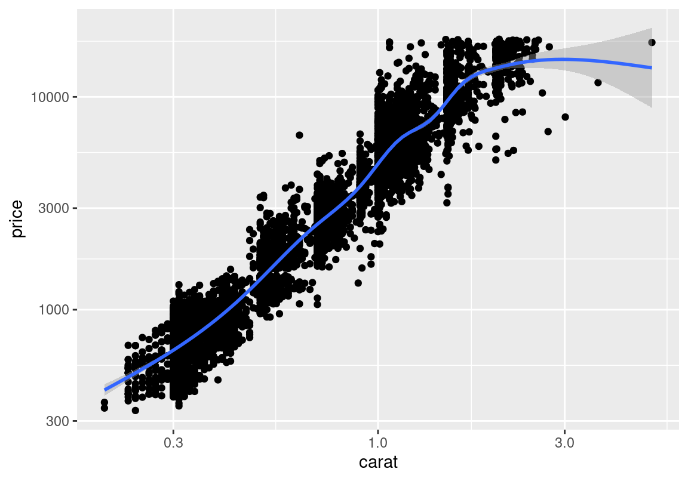
> cor(diamonds_sample$carat, diamonds_sample$price)[1] 0.9202264두 변수 모두 로그 변환을 하여 산점도를 다시 그려보자. 마지막 몇 데이터를 제외하고는 중량과 가격은 거의 선형에 가까운 관계를 보인다. 이는 로그 변환 후에 상관계수를 구해보면 확실히 알 수 있다. 따라서 다이아몬드의 가격은 중량에 의해 많은 부분을 설명하고 예측할 수 있을 것이라는 것을 예상할 수 있다.
> ggplot(diamonds_sample, aes(x = carat, y = price)) +
+ geom_point() + geom_smooth() +
+ scale_x_log10() + scale_y_log10()`geom_smooth()` using method = 'gam' and formula 'y ~ s(x, bs = "cs")'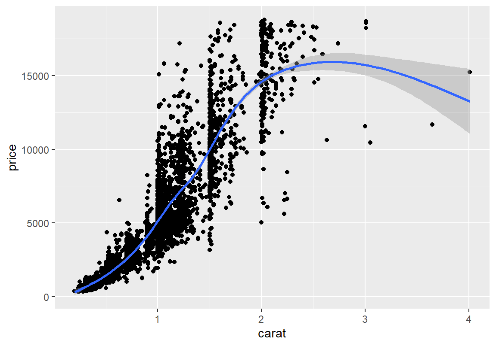
> cor(log10(diamonds_sample$carat), log10(diamonds_sample$price))[1] 0.96482218.2.5 범주형 변수를 조건으로 수치형 변수의 상관성 탐색
앞의 다이아몬드의 중량과 가격 사례는 중량이 가격에 매우 높은 상관성이 있음을 보여준다. 그러나 우리는 다음의 두 가지 추가 질문을 해 볼 필요가 있다.
- 동일한 중량에도 가격의 차이가 상당히 발생함을 볼 수 있다. 그러면 다이아몬드 중량을 제외하고 남은 가격의 변동성은 어디서 왔을까?
- 산점도의 선형 추세선에 잘 들어맞지 않는 중량에 비해 가격이 낮은 다이아몬드들은 그 이유가 무엇일까?
이 질문에 대한 답이 혹시 다이아몬드의 가공품질(cut)에 있는 것은 아닌지 한번 살펴보자. 그러려면 중량과 가격의 상관관계가 가공품질에 따라 달라지는지 확인해 보아야 한다. 산점도에서 범주형 변수의 값에 따라 두 수치형 변수의 상관성에 차이가 있는지를 살펴보는 가장 쉬운 방법은 산점도의 점을 범주형 변수의 값에 따라 다른 색상 또는 모양으로 그려보는 것이다.
> ggplot(diamonds_sample, aes(x = carat, y = price, color = cut)) +
+ geom_point() + geom_smooth(se=F) +
+ scale_x_log10() + scale_y_log10()`geom_smooth()` using method = 'gam' and formula 'y ~ s(x, bs = "cs")'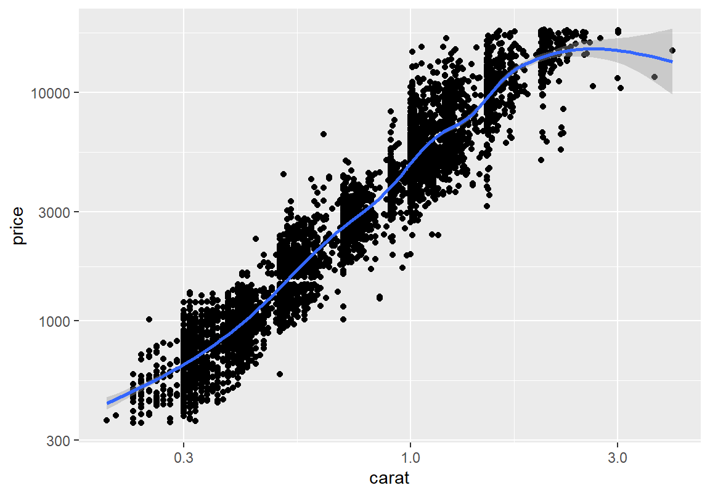
산점도에 나타나는 너무 많은 데이터가 오히려 변수들의 상관 관계를 확인하기 어렵게 만든다. 그래프에서 점을 제외하고 추세선만 그려보자. 가장 낮은 가공 품질인 Fair와 다른 가공품질의 가격 추이가 조금은 다른 것을 볼 수 있다. 그러나 Good에서 Ideal 등급 사이의 추세선은 신뢰구간이 서로 겹쳐 있어서 가공품질이 나머지 가격 변동성을 설명해주는 부분은 그리 크지 않은 것으로 파악된다.
> ggplot(diamonds_sample, aes(x = carat, y = price, color = cut)) +
+ geom_smooth() +
+ scale_x_log10() + scale_y_log10()`geom_smooth()` using method = 'gam' and formula 'y ~ s(x, bs = "cs")'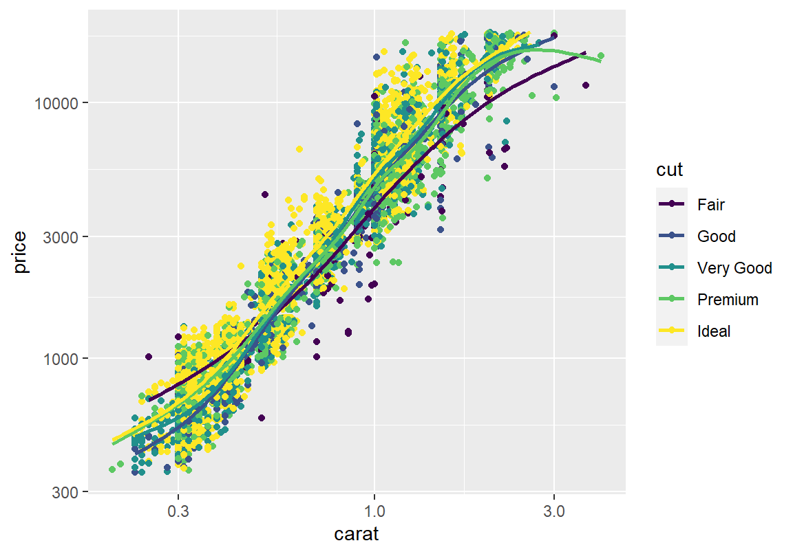
이번에 다이아몬드의 투명도(clarity)에 따라 중량과 가격의 상관성을 확인해 보자. 이번에는 점을 흐리게 하여 추세선의 아래 층에 같이 그렸다. 중량이 같은 경우 투명성이 커질수록 가격의 상단에 데이터와 추세선이 위치하는 것을 볼 수 있다. 그리고 투명도에 따른 가격의 차이가 중량을 제외한 가격의 변동성의 대부분을 설명하는 것으로 보인다. 그리고 하나 더 파악할 수 있는 것은 중량이 1 캐럿이 넘어가면 중량과 가격의 로그 변환의 선형성이 비선형적으로 움직이는 것을 볼 수 있다.
> ggplot(diamonds_sample, aes(x = carat, y = price, color = clarity)) +
+ geom_point(alpha = 0.1) +
+ geom_smooth() +
+ scale_x_log10() + scale_y_log10()`geom_smooth()` using method = 'gam' and formula 'y ~ s(x, bs = "cs")'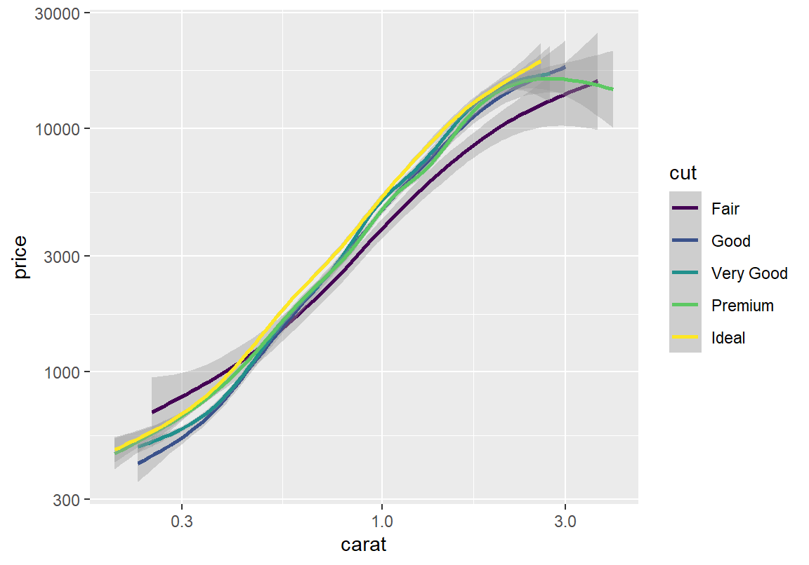
범주형 변수의 값에 따라 두 수치형 변수의 관계를 살펴보기는 측면으로 나누어 그래프를 그려 볼 수도 있다. 이 경우에 각 범주별로 그래프가 분리되어 그려져 각각의 경향을 파악하기는 쉬우나 서로 비교하는 것은 어렵다.
> ggplot(diamonds_sample, aes(x = carat, y = price)) +
+ geom_point() + geom_smooth() +
+ scale_x_log10() + scale_y_log10() +
+ facet_wrap(~ clarity)`geom_smooth()` using method = 'gam' and formula 'y ~ s(x, bs = "cs")'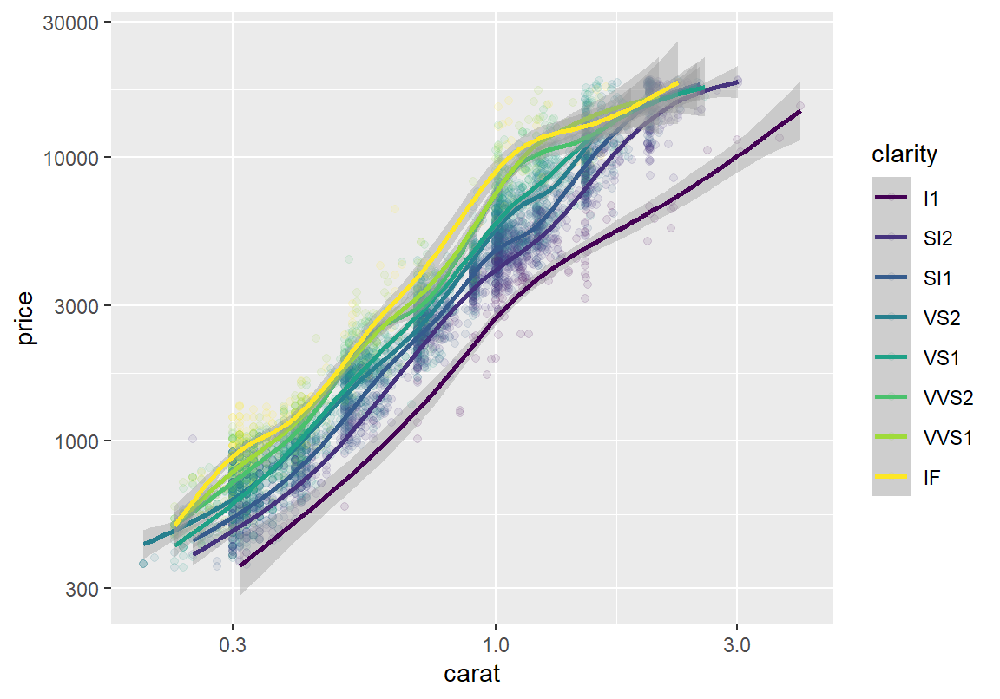
두 수치형 변수의 관계를 범주형 변수에 따라 어떻게 달라지는지 더 자세히 살펴보려면 회귀분석 모형을 사용해야 한다. 관련된 내용은 회귀 분석과 관련된 강의와 9 장을 참조한다.
8.2.6 수치형 변수를 조건으로 두 수치형 변수의 상관성 분석
그러면 다른 수치형 변수의 값에 따라 수치형 변수의 상관성에 차이가 있는지도 분석할 수 있을까? 일반적으로 3개 이상의 수치 변수의 관계는 다중 회귀 모형과 공분산분석을 이용하여 탐구한다. 이에 대해서는 회귀 분석과 공분산분석을 다룰 때 살펴보도록 한다.
기술통계 방법을 사용하여 이를 살펴보는 방법은 조건이 되는 수치형 변수를 범주형 변수로 변환한 후 앞서 범주형 변수를 조건으로 두 수치형 변수에 대한 상관성 분석을 한 방법을 이용하는 것이다. 예를 들어 다음은 diamonds 데이터의 table 변수를 4분위수로 4 개의 구간으로 나누어 table_cut 열에 저장한 후, 이 열을 기준으로 측면으로 나누어 다이아몬드의 중량과 가격 산점도를 그려 볼 수 있다.
> diamonds_sample$table_cut <-
+ cut(diamonds_sample$table, breaks = quantile(diamonds_sample$table), include.lowest = T)
> ggplot(diamonds_sample, aes(x = carat, y = price)) +
+ geom_point() + geom_smooth() +
+ scale_x_log10() + scale_y_log10() +
+ facet_wrap(~ table_cut)`geom_smooth()` using method = 'gam' and formula 'y ~ s(x, bs = "cs")'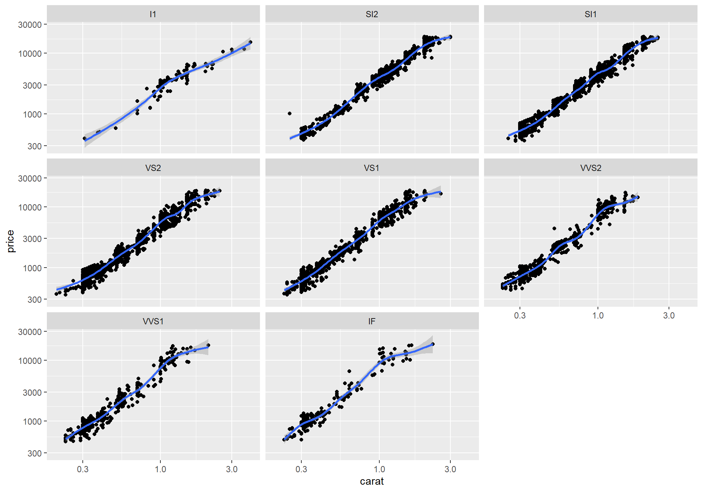
8.2.7 ggpairs()를 이용한 수치형 변수를 한 번에 분석하기
GGally 패키지에서 제공하는 ggpairs() 함수를 사용하면 수치형 변수의 확률 밀도 그래프, 수치형 변수 간의 산점도, 수치형 변수 사이의 상관계수와 가설검정 결과를 한 번에 확인할 수 있어 편리하다.
먼저 GGally 패키지를 설치한다.
> install.packages("GGally")ggpairs() 함수의 첫 번째 인수는 데이터, 두번째 인수에는 그래프를 그릴 열의 위치를 지정한다.
> GGally::ggpairs(course, 5:8)그래프 행렬의 대각선에는 각 변수의 확률 밀도 그래프가 그려진다. 우상단 삼각형에는 두 변수 간의 상관계수와 가설검정 결과를 보여준다. * 유의수준 10%에서 두 변수의 상관성이 의미있다는 것을 나타내며, **와 ***은 각각 유의수준 5%와 1%에서 상관성이 의미있다는 것을 나타낸다. 우하단의 삼각형은 두 변수 간의 산점도를 보여준다.
ggpairs() 함수는 수치형 변수뿐 아니라 범주형 변수에 대해서도 그래프를 그려준다. 관심있는 독자는 course 데이터 전체에 대하여 ggpairs() 함수를 적용해 보기 바란다. (두 번째 인수를 생략하면 전체 열에 대하여 ggpairs() 함수를 적용할 수 있다.)
References
왜도에 대해서는 조금 다른 정의도 있다. 다음 논문을 참조하기 바란다. Joanes, D.N. and Gill, C.A (1998). Comparing measures of sample skewness and kurtosis. The Statistician, 47, 183-189.↩︎
첨도에 대해서는 조금 다른 정의도 있다. 다음 논문을 참조하기 바란다. Joanes, D.N. and Gill, C.A (1998). Comparing measures of sample skewness and kurtosis. The Statistician, 47, 183-189.↩︎